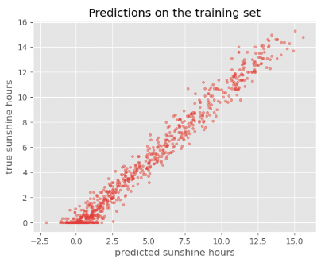
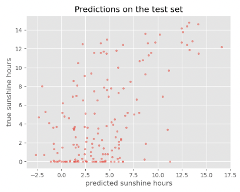
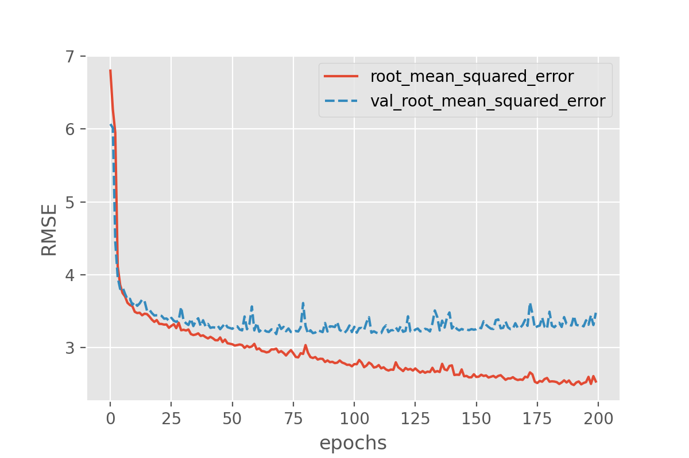
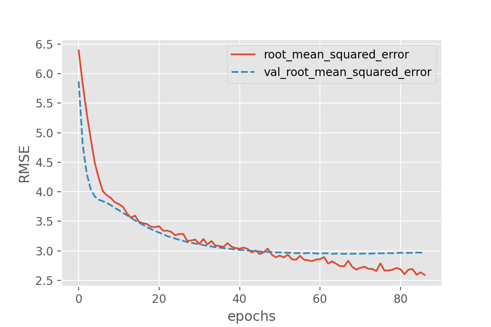
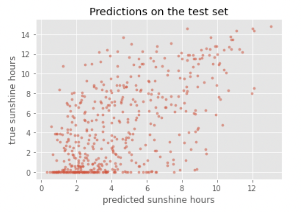
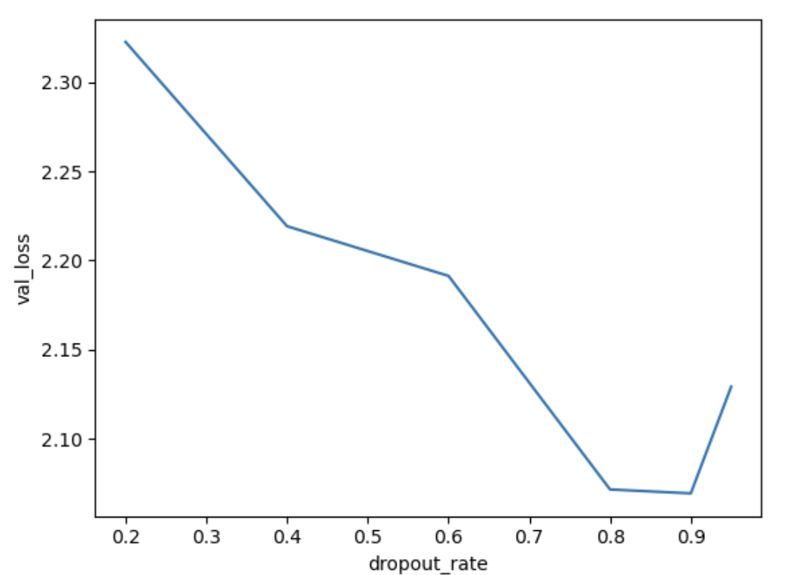

Introduction to Deep Learning
This is a hands-on introduction to the first steps in deep learning, intended for researchers who are familiar with (non-deep) machine learning.
The use of deep learning has seen a sharp increase of popularity and applicability over the last decade. While deep learning can be a useful tool for researchers from a wide range of domains, taking the first steps in the world of deep learning can be somewhat intimidating. This introduction covers the basics of deep learning in a practical and hands-on manner, so that upon completion, you will be able to train your first neural network and understand what next steps to take to improve the model.
We start with explaining the basic concepts of neural networks, and then go through the different steps of a deep learning workflow. Learners will learn how to prepare data for deep learning, how to implement a basic deep learning model in Python with Keras, how to monitor and troubleshoot the training process and how to implement different layer types such as convolutional layers.
Setup
Software Setup
Discussion
Installing Python
Python is a popular language for scientific computing, and a frequent choice for machine learning as well. To install Python, follow the Beginner’s Guide or head straight to the download page.
Please set up your python environment at least a day in advance of the workshop. If you encounter problems with the installation procedure, ask your workshop organizers via e-mail for assistance so you are ready to go as soon as the workshop begins.
Installing the required packages
Pip is the package management system built into Python. Pip should be available in your system once you installed Python successfully.
Open a terminal (Mac/Linux) or Command Prompt (Windows) and run the following commands.
Create a virtual environment called
dl_workshop:
On Linux/macOs
python3 -m venv dl_workshop
On Windows
py -m venv dl_workshop
Activate the newly created virtual environment:
On Linux/macOs
source dl_workshop/bin/activate
On Windows
dl_workshop\Scripts\activate
Remember that you need to activate your environment every time you restart your terminal!
Install the required packages:
On Linux/macOs
python3 -m pip install jupyter seaborn scikit-learn pandas tensorflow pydot
Note for MacOS users: there is a package tensorflow-metal which accelerates the training of machine learning models with TensorFlow on a recent Mac with a Silicon chip (M1/M2/M3).
However, the installation is currently broken in the most recent version (as of January 2025), see the developer forum.
On Windows
py -m pip install jupyter seaborn scikit-learn pandas tensorflow pydot
Note: Tensorflow makes Keras available as a module too.
An optional challenge in episode 2 requires installation of Graphviz and instructions for doing that can be found by following this link.
Starting Jupyter Lab
We will teach using Python in Jupyter Lab, a programming environment that runs in a web browser. Jupyter Lab is compatible with Firefox, Chrome, Safari and Chromium-based browsers. Note that Internet Explorer and Edge are not supported. See the Jupyter Lab documentation for an up-to-date list of supported browsers.
To start Jupyter Lab, open a terminal (Mac/Linux) or Command Prompt (Windows), make sure that you activated the virtual environment you created for this course, and type the command:
jupyter lab
Check your setup
To check whether all packages installed correctly, start a jupyter notebook in jupyter lab as explained above. Run the following lines of code:
import sklearn
print('sklearn version: ', sklearn.__version__)
import seaborn
print('seaborn version: ', seaborn.__version__)
import pandas
print('pandas version: ', pandas.__version__)
import tensorflow
print('Tensorflow version: ', tensorflow.__version__)
This should output the versions of all required packages without giving errors. Most versions will work fine with this lesson, but:
For Keras and Tensorflow, the minimum version is 2.12.0
For sklearn, the minimum version is 1.2.2
Fallback option: cloud environment
If a local installation does not work for you, it is also possible to run this lesson in Binder Hub. This should give you an environment with all the required software and data to run this lesson, nothing which is saved will be stored, please copy any files you want to keep. Note that if you are the first person to launch this in the last few days it can take several minutes to startup. The second person who loads it should find it loads in under a minute. Instructors who intend to use this option should start it themselves shortly before the workshop begins.
Alternatively you can use Google colab. If you open a jupyter notebook here, the required packages are already pre-installed. Note that google colab uses jupyter notebook instead of Jupyter Lab.
Downloading the required datasets
Download the weather dataset prediction csv and Dollar street dataset (4 files in total)
1. Introduction
Questions
What is deep learning?
What is a neural network?
Which operations are performed by a single neuron?
How do neural networks learn?
When does it make sense to use and not use deep learning?
What are tools involved in deep learning?
What is the workflow for deep learning?
Why did we choose to use Keras in this lesson?
Objectives
Define deep learning
Describe how a neural network is build up
Explain the operations performed by a single neuron
Describe what a loss function is
Recall the sort of problems for which deep learning is a useful tool
List some of the available tools for deep learning
Recall the steps of a deep learning workflow
Test that you have correctly installed the Keras, Seaborn and scikit-learn libraries
What is Deep Learning?
Deep Learning, Machine Learning and Artificial Intelligence
Deep learning (DL) is just one of many techniques collectively known as machine learning. Machine learning (ML) refers to techniques where a computer can “learn” patterns in data, usually by being shown numerous examples to train it. People often talk about machine learning being a form of artificial intelligence (AI). Definitions of artificial intelligence vary, but usually involve having computers mimic the behaviour of intelligent biological systems. Since the 1950s many works of science fiction have dealt with the idea of an artificial intelligence which matches (or exceeds) human intelligence in all areas. Although there have been great advances in AI and ML research recently we can only come close to human like intelligence in a few specialist areas and are still a long way from a general purpose AI. The image below shows some differences between artificial intelligence, machine learning and deep learning.

Neural Networks
A neural network is an artificial intelligence technique loosely based on the way neurons in the brain work. A neural network consists of connected computational units called neurons. Let’s look at the operations of a single neuron.
A single neuron
Each neuron …
has one or more inputs (\(x_1, x_2, ...\)), e.g. input data expressed as floating point numbers
most of the time, each neuron conducts 3 main operations:
take the weighted sum of the inputs where (\(w_1, w_2, ...\)) indicate weights
add an extra constant weight (i.e. a bias term) to this weighted sum
apply an activation function to the output so far, we will explain activation functions
return one output value, again a floating point number.
one example equation to calculate the output for a neuron is: \(output = Activation(\sum_{i} (x_i*w_i) + bias)\)

Activation functions
The goal of the activation function is to convert the weighted sum of the inputs to the output signal of the neuron. This output is then passed on to the next layer of the network. There are many different activation functions, 3 of them are introduced in the exercise below.
Activation functions
Look at the following activation functions:
A. Sigmoid activation function The sigmoid activation function is given by:

B. ReLU activation function The Rectified Linear Unit (ReLU) activation function is defined as:
This involves a simple comparison and maximum calculation, which are basic operations that are computationally inexpensive. It is also simple to compute the gradient: 1 for positive inputs and 0 for negative inputs.

C. Linear (or identity) activation function (output=input) The linear activation function is simply the identity function:

Combine the following statements to the correct activation function:
This function enforces the activation of a neuron to be between 0 and 1
This function is useful in regression tasks when applied to an output neuron
This function is the most popular activation function in hidden layers, since it introduces non-linearity in a computationally efficient way.
This function is useful in classification tasks when applied to an output neuron
(optional) For positive values this function results in the same activations as the identity function.
(optional) This function is not differentiable at 0
(optional) This function is the default for Dense layers (search the Keras documentation!)
Activation function plots by Laughsinthestocks - Own work, CC BY-SA 4.0, https://commons.wikimedia.org/w/index.php?curid=44920411, https://commons.wikimedia.org/w/index.php?curid=44920600, https://commons.wikimedia.org/w/index.php?curid=44920533
Solution
A
C
B
A
B
B
C
Combining multiple neurons into a network
Multiple neurons can be joined together by connecting the output of one to the input of another. These connections are associated with weights that determine the ‘strength’ of the connection, the weights are adjusted during training. In this way, the combination of neurons and connections describe a computational graph, an example can be seen in the image below.
In most neural networks, neurons are aggregated into layers. Signals travel from the input layer to the output layer, possibly through one or more intermediate layers called hidden layers. The image below shows an example of a neural network with three layers, each circle is a neuron, each line is an edge and the arrows indicate the direction data moves in.

Image credit: Glosser.ca, CC BY-SA 3.0 https://creativecommons.org/licenses/by-sa/3.0, via Wikimedia Commons, original source: https://commons.wikimedia.org/wiki/File:Colored_neural_network.svg
{kind=link}
Neural network calculations
.
1. Calculate the output for one neuron
Suppose we have:
Input: X = (0, 0.5, 1)
Weights: W = (-1, -0.5, 0.5)
Bias: b = 1
Activation function relu:
f(x) = max(x, 0)
What is the output of the neuron?
Note: You can use whatever you like: brain only, pen&paper, Python, Excel…
2. (optional) Calculate outputs for a network
Have a look at the following network where:
\(X_1\) and \(X_2\) denote the two inputs of the network.
\(h_1\) and \(h_2\) denote the two neurons in the hidden layer. They both have ReLU activation functions.
\(h_1\) and \(h_2\) denotes the output neuron. It has a ReLU activation function.
The value on the arrows represent the weight associated to that input to the neuron.
\(b_i\) denotes the bias term of that specific neuron

a. Calculate the output of the network for the following combinations of inputs:
x1 |
x2 |
y |
|---|---|---|
0 |
0 |
.. |
0 |
1 |
.. |
1 |
0 |
.. |
1 |
1 |
.. |
b. What logical problem does this network solve?
Solution
1: calculate the output for one neuron
You can calculate the output as follows:
Weighted sum of input:
0 * (-1) + 0.5 * (-0.5) + 1 * 0.5 = 0.25Add the bias:
0.25 + 1 = 1.25Apply activation function:
max(1.25, 0) = 1.25
So, the neuron’s output is 1.25
2: Calculate outputs for a network
a.
x1 |
x2 |
y |
|---|---|---|
0 |
0 |
0 |
0 |
1 |
1 |
1 |
1 |
0 |
1 |
0 |
1 |
b. This solves the XOR logical problem, the output is 1 if only one of the two inputs is 1.
What makes deep learning deep learning?
Neural networks are not a new technique, they have been around since the late 1940s. But until around 2010 neural networks tended to be quite small, consisting of only 10s or perhaps 100s of neurons. This limited them to only solving quite basic problems. Around 2010, improvements in computing power and the algorithms for training the networks made much larger and more powerful networks practical. These are known as deep neural networks or deep learning.
Deep learning requires extensive training using example data which shows the network what output it should produce for a given input. One common application of deep learning is classifying images. Here the network will be trained by being “shown” a series of images and told what they contain. Once the network is trained it should be able to take another image and correctly classify its contents.
But we are not restricted to just using images, any kind of data can be learned by a deep learning neural network. This makes them able to appear to learn a set of complex rules only by being shown what the inputs and outputs of those rules are instead of being taught the actual rules. Using these approaches, deep learning networks have been taught to play video games and even drive cars.
The data on which networks are trained usually has to be quite extensive, typically including thousands of examples. For this reason they are not suited to all applications and should be considered just one of many machine learning techniques which are available.
While traditional “shallow” networks might have had between three and five layers, deep networks often have tens or even hundreds of layers. This leads to them having millions of individual weights. The image below shows a diagram of all the layers on a deep learning network designed to detect pedestrians in images.
This image is from the paper “An Efficient Pedestrian Detection Method Based on YOLOv2” by Zhongmin Liu, Zhicai Chen, Zhanming Li, and Wenjin Hu published in Mathematical Problems in Engineering, Volume 2018

A visual representation of a deep neural network used to detect pedestrians in images. There are too many neurons to draw all of them, so each layer is represented by a panel, with values indicating how many neurons are in each dimension of the layer. Note that this model has 3-dimensional layers instead of the 1-dimensional layers that we introduced before. The input (left most) layer of the network is an image of 448 x 448 pixels and 3 RGB channels. The final (right most) layer of the network outputs a zero or one to determine if the input data belongs to the class of data we are interested in. The output of the previous layer is the input to the next layer. Note that the color coding refers to different layer types that will be introduced one by one as we proceed in this lesson.
How do neural networks learn?
What happens in a neural network during the training process? The ultimate goal is of course to find a model that makes predictions that are as close to the target value as possible. In other words, the goal of training is to find the best set of parameters (weights and biases) that bring the error between prediction and expected value to a minimum. The total error between prediction and expected value is quantified in a loss function (also called cost function). There are lots of loss functions to pick from, and it is important that you pick one that matches your problem definition well. We will look at an example of a loss function in the next exercise.
Instructor
There is an issue when rendering the MSE formula in the following box involving the Chrome browser on MacOS. To solve it:
Right-click on some of the misrendered MathJax.
Click on “Math Settings”.
Click on “Math Renderer”.
Click on “Common HTML”.
from: https://physics.meta.stackexchange.com/questions/14408/bug-in-mathjax-rendering-using-chrome
Exercise: Loss function
1. Compute the Mean Squared Error
One of the simplest loss functions is the Mean Squared Error. MSE = \(\frac{1}{n} \Sigma_{i=1}^n({y}-\hat{y})^2\) . It is the mean of all squared errors, where the error is the difference between the predicted and expected value. In the following table, fill in the missing values in the ‘squared error’ column. What is the MSE loss for the predictions on these 4 samples?
Prediction |
Expected value |
Squared error |
|---|---|---|
1 |
-1 |
4 |
2 |
-1 |
.. |
0 |
0 |
.. |
3 |
2 |
.. |
MSE: |
.. |
2. (optional) Huber loss
A more complicated and less used loss function for regression is the Huber loss.
Below you see the Huber loss (green, delta = 1) and Squared error loss (blue)
as a function of y_true - y_pred.

Which loss function is more sensitive to outliers?
Solution
1. ‘Compute the Mean Squared Error’
Prediction |
Expected value |
Squared error |
|---|---|---|
1 |
-1 |
4 |
2 |
-1 |
9 |
0 |
0 |
0 |
3 |
2 |
1 |
MSE: |
3.5 |
2. ‘Huber loss’
The squared error loss is more sensitive to outliers. Errors between -1 and 1 result in the same loss value for both loss functions. But, larger errors (in other words: outliers) result in quadratically larger losses for the Mean Squared Error, while for the Huber loss they only increase linearly.
So, a loss function quantifies the total error of the model. The process of adjusting the weights in such a way as to minimize the loss function is called ‘optimization’. We will dive further into how optimization works in episode 3. For now, it is enough to understand that during training the weights in the network are adjusted so that the loss decreases through the process of optimization. This ultimately results in a low loss, and this, generally, implies predictions that are closer to the expected values.
BREAK
This is a good time for switching instructor and/or a break.
What sort of problems can deep learning solve?
Pattern/object recognition
Segmenting images (or any data)
Translating between one set of data and another, for example natural language translation.
Generating new data that looks similar to the training data, often used to create synthetic datasets, art or even “deepfake” videos.
This can also be used to give the illusion of enhancing data, for example making images look sharper, video look smoother or adding colour to black and white images. But beware of this, it is not an accurate recreation of the original data, but a recreation based on something statistically similar, effectively a digital imagination of what that data could look like.
Examples of Deep Learning in Research
Here are just a few examples of how deep learning has been applied to some research problems. Note: some of these articles might be behind paywalls.
What sort of problems can deep learning not solve?
Any case where only a small amount of training data is available.
Tasks requiring an explanation of how the answer was arrived at.
Classifying things which are nothing like their training data.
What sort of problems can deep learning solve, but should not be used for?
Deep learning needs a lot of computational power, for this reason it often relies on specialised hardware like graphical processing units (GPUs). Many computational problems can be solved using less intensive techniques, but could still technically be solved with deep learning.
The following could technically be achieved using deep learning, but it would probably be a very wasteful way to do it:
Logic operations, such as computing totals, averages, ranges etc. (see this example applying deep learning to solve the “FizzBuzz” problem often used for programming interviews)
Modelling well defined systems, where the equations governing them are known and understood.
Basic computer vision tasks such as edge detection, decreasing colour depth or blurring an image.
Deep Learning Problems Exercise
Which of the following would you apply deep learning to?
Recognising whether or not a picture contains a bird.
Calculating the median and interquartile range of a dataset.
Identifying MRI images of a rare disease when only one or two example images available for training.
Identifying people in pictures after being trained only on cats and dogs.
Translating English into French.
Solution
and 5 are the sort of tasks often solved with deep learning.
is technically possible but solving this with deep learning would be extremely wasteful, you could do the same with much less computing power using traditional techniques.
will probably fail because there is not enough training data.
will fail because the deep learning system only knows what cats and dogs look like, it might accidentally classify the people as cats or dogs.
How much data do you need for deep learning?
The rise of deep learning is partially due to the increased availability of very large datasets. But how much data do you actually need to train a deep learning model? Unfortunately, this question is not easy to answer. It depends, among other things, on the complexity of the task (which you often do not know beforehand), the quality of the available dataset and the complexity of the network. For complex tasks with large neural networks, we often see that adding more data continues to improve performance. However, this is also not a generic truth: if the data you add is too similar to the data you already have, it will not give much new information to the neural network.
What if I do not have enough data?
In case you have too little data available to train a complex network from scratch, it is sometimes possible to use a pretrained network that was trained on a similar problem. Another trick is data augmentation, where you expand the dataset with artificial data points that could be real. An example of this is mirroring images when trying to classify cats and dogs. An horizontally mirrored animal retains the label, but exposes a different view.
Deep learning workflow
To apply deep learning to a problem there are several steps we need to go through:
1. Formulate/Outline the problem
Firstly we must decide what it is we want our deep learning system to do. Is it going to classify some data into one of a few categories? For example if we have an image of some hand written characters, the neural network could classify which character it is being shown. Or is it going to perform a prediction? For example trying to predict what the price of something will be tomorrow given some historical data on pricing and current trends.
2. Identify inputs and outputs
Next we need to identify what the inputs and outputs of the neural network will be. This might require looking at our data and deciding what features of the data we can use as inputs. If the data is images then the inputs could be the individual pixels of the images.
For the outputs we will need to look at what we want to identify from the data. If we are performing a classification problem then typically we will have one output for each potential class.
3. Prepare data
Many datasets are not ready for immediate use in a neural network and will require some preparation. Neural networks can only really deal with numerical data, so any non-numerical data (for example words) will have to be somehow converted to numerical data.
Next we will need to divide the data into multiple sets. One of these will be used by the training process and we will call it the training set. Another will be used to evaluate the accuracy of the training and we will call that one the test set. Sometimes we will also use a 3rd set known as a validation set to refine the model.
4. Choose a pre-trained model or build a new architecture from scratch
Often we can use an existing neural network instead of designing one from scratch. Training a network can take a lot of time and computational resources. There are a number of well publicised networks which have been shown to perform well at certain tasks, if you know of one which already does a similar task well then it makes sense to use one of these.
If instead we decide we do want to design our own network then we need to think about how many input neurons it will have, how many hidden layers and how many outputs, what types of layers we use (we will explore the different types later on). This will probably need some experimentation and we might have to try tweaking the network design a few times before we see acceptable results.
5. Choose a loss function and optimizer
The loss function tells the training algorithm how far away the predicted value was from the true value. We will look at choosing a loss function in more detail later on.
The optimizer is responsible for taking the output of the loss function and then applying some changes to the weights within the network. It is through this process that the “learning” (adjustment of the weights) is achieved.
6. Train the model
We can now go ahead and start training our neural network. We will probably keep doing this for a given number of iterations through our training dataset (referred to as epochs) or until the loss function gives a value under a certain threshold. The graph below show the loss against the number of epochs, generally the loss will go down with each epoch, but occasionally it will see a small rise.

7. Perform a Prediction/Classification
After training the network we can use it to perform predictions. This is the mode you would use the network in after you have fully trained it to a satisfactory performance. Doing predictions on a special hold-out set is used in the next step to measure the performance of the network.
8. Measure Performance
Once we trained the network we want to measure its performance. To do this we use some additional data that was not part of the training, this is known as a test set. There are many different methods available for measuring performance and which one is best depends on the type of task we are attempting. These metrics are often published as an indication of how well our network performs.
9. Refine the model
We refine the model further. We can for example slightly change the architecture of the model, or change the number of nodes in a layer. Hyperparameters are all the parameters set by the person configuring the machine learning instead of those learned by the algorithm itself. The hyperparameters include the number of epochs or the parameters for the optimizer. It might be necessary to adjust these and re-run the training many times before we are happy with the result, this is often done automatically and that is referred to as hyperparameter tuning.
Deep Learning Libraries
There are many software libraries available for deep learning including:
TensorFlow
TensorFlow was developed by Google and is one of the older deep learning libraries, ported across many languages since it was first released to the public in 2015. It is very versatile and capable of much more than deep learning but as a result it often takes a lot more lines of code to write deep learning operations in TensorFlow than in other libraries. It offers (almost) seamless integration with GPU accelerators and Google’s own TPU (Tensor Processing Unit) chips that are built specially for machine learning.
PyTorch
PyTorch was developed by Facebook in 2016 and is a popular choice for deep learning applications. It was developed for Python from the start and feels a lot more “pythonic” than TensorFlow. Like TensorFlow it was designed to do more than just deep learning and offers some very low level interfaces. PyTorch Lightning offers a higher level interface to PyTorch to set up experiments. Like TensorFlow it is also very easy to integrate PyTorch with a GPU. In many benchmarks it outperforms the other libraries.
Keras
Keras is designed to be easy to use and usually requires fewer lines of code than other libraries. We have chosen it for this lesson for that reason. Keras can actually work on top of TensorFlow (and several other libraries), hiding away the complexities of TensorFlow while still allowing you to make use of their features.
The processing speed of Keras is sometimes not as high as with other libraries and if you are going to move on to create very large networks using very large datasets then you might want to consider one of the other libraries. But for many applications, the difference will not be enough to worry about and the time you will save with simpler code will exceed what you will save by having the code run a little faster.
Keras also benefits from a very good set of online documentation and a large user community. You will find that most of the concepts from Keras translate very well across to the other libraries if you wish to learn them at a later date.
Installing Keras and other dependencies
Follow the setup instructions to install Keras, Seaborn and scikit-learn.
Testing Keras Installation
Keras is available as a module within TensorFlow, as described in the setup instructions. Let’s therefore check whether you have a suitable version of TensorFlow installed. Open up a new Jupyter notebook or interactive python console and run the following commands:
import tensorflow
print(tensorflow.__version__)
2.17.0
You should get a version number reported. At the time of writing 2.17.0 is the latest version.
Testing Seaborn Installation
Lets check you have a suitable version of seaborn installed. In your Jupyter notebook or interactive python console run the following commands:
import seaborn
print(seaborn.__version__)
0.13.2
You should get a version number reported. At the time of writing 0.13.2 is the latest version.
Testing scikit-learn Installation
Lets check you have a suitable version of scikit-learn installed. In your Jupyter notebook or interactive python console run the following commands:
import sklearn
print(sklearn.__version__)
1.5.1
You should get a version number reported. At the time of writing 1.5.1 is the latest version.
Keypoints
Machine learning is the process where computers learn to recognise patterns of data.
Artificial neural networks are a machine learning technique based on a model inspired by groups of neurons in the brain.
Artificial neural networks can be trained on example data.
Deep learning is a machine learning technique based on using many artificial neurons arranged in layers.
Neural networks learn by minimizing a loss function.
Deep learning is well suited to classification and prediction problems such as image recognition.
To use deep learning effectively we need to go through a workflow of: defining the problem, identifying inputs and outputs, preparing data, choosing the type of network, choosing a loss function, training the model, refine the model, measuring performance before we can classify data.
Keras is a deep learning library that is easier to use than many of the alternatives such as TensorFlow and PyTorch.
2. Classification by a neural network using Keras
Questions
How do I compose a neural network using Keras?
How do I train this network on a dataset?
How do I get insight into learning process?
How do I measure the performance of the network?
Objectives
Use the deep learning workflow to structure the notebook
Explore the dataset using pandas and seaborn
Identify the inputs and outputs of a deep neural network.
Use one-hot encoding to prepare data for classification in Keras
Describe a fully connected layer
Implement a fully connected layer with Keras
Use Keras to train a small fully connected network on prepared data
Interpret the loss curve of the training process
Use a confusion matrix to measure the trained networks’ performance on a test set
Introduction
In this episode we will learn how to create and train a neural network using Keras to solve a simple classification task.
The goal of this episode is to quickly get your hands dirty in actually defining and training a neural network, without going into depth of how neural networks work on a technical or mathematical level. We want you to go through the full deep learning workflow once before going into more details.
In fact, this is also what we would recommend you to do when working on real-world problems: First quickly build a working pipeline, while taking shortcuts. Then, slowly make the pipeline more advanced while you keep on evaluating the approach.
In episode 3 we will expand on the concepts that are lightly introduced in this episode. Some of these concepts include: how to monitor the training progress and how optimization works.
Instructor
It is good to stress the goal for this episode a few times, because learners will usually have a lot of questions like: ‘Why don’t we normalize our features’ or ‘Why do we choose Adam optimizer?’. It can be a good idea to park some of these questions for discussion in episode 3 and 4.
As a reminder below are the steps of the deep learning workflow:
Formulate / Outline the problem
Identify inputs and outputs
Prepare data
Choose a pretrained model or start building architecture from scratch
Choose a loss function and optimizer
Train the model
Perform a Prediction/Classification
Measure performance
Refine the model
Save model
In this episode we will focus on a minimal example for each of these steps, later episodes will build on this knowledge to go into greater depth for some or all of these steps.
GPU usage
For this lesson having a GPU (graphics processing unit) available is not needed. We specifically use very small toy problems so that you do not need one. However, Keras will use your GPU automatically when it is available. Using a GPU becomes necessary when tackling larger datasets or complex problems which require a more complex neural network.
1. Formulate/outline the problem: penguin classification
In this episode we will be using the penguin dataset. This is a dataset that was published in 2020 by Allison Horst and contains data on three different species of the penguins.
We will use the penguin dataset to train a neural network which can classify which species a penguin belongs to, based on their physical characteristics.
Goal
The goal is to predict a penguins’ species using the attributes available in this dataset.
The palmerpenguins data contains size measurements for three penguin species observed on three islands in the Palmer Archipelago, Antarctica.
The physical attributes measured are flipper length, beak length, beak width, body mass, and sex.

“Palmer Penguins”

“Culmen Depth”
These data were collected from 2007 - 2009 by Dr. Kristen Gorman with the Palmer Station Long Term Ecological Research Program, part of the US Long Term Ecological Research Network. The data were imported directly from the Environmental Data Initiative (EDI) Data Portal, and are available for use by CC0 license (“No Rights Reserved”) in accordance with the Palmer Station Data Policy.
2. Identify inputs and outputs
To identify the inputs and outputs that we will use to design the neural network we need to familiarize ourselves with the dataset. This step is sometimes also called data exploration.
We will start by importing the Seaborn library that will help us get the dataset and visualize it. Seaborn is a powerful library with many visualizations. Keep in mind it requires the data to be in a pandas dataframe, luckily the datasets available in seaborn are already in a pandas dataframe.
import seaborn as sns
We can load the penguin dataset using
penguins = sns.load_dataset('penguins')
This will give you a pandas dataframe which contains the penguin data.
Inspecting the data
Using the pandas head function gives us a quick look at the data:
penguins.head()
species |
island |
bill_length_mm |
bill_depth_mm |
flipper_length_mm |
body_mass_g |
sex |
|
|---|---|---|---|---|---|---|---|
0 |
Adelie |
Torgersen |
39.1 |
18.7 |
181.0 |
3750.0 |
Male |
1 |
Adelie |
Torgersen |
39.5 |
17.4 |
186.0 |
3800.0 |
Female |
2 |
Adelie |
Torgersen |
40.3 |
18.0 |
195.0 |
3250.0 |
Female |
3 |
Adelie |
Torgersen |
NaN |
NaN |
NaN |
NaN |
NaN |
4 |
Adelie |
Torgersen |
36.7 |
19.3 |
193.0 |
3450.0 |
Female |
We can use all columns as features to predict the species of the penguin, except for the species column itself.
Let’s look at the shape of the dataset:
penguins.shape
There are 344 samples and 7 columns (plus the index column), so 6 features.
Visualization
Looking at numbers like this usually does not give a very good intuition about the data we are working with, so let us create a visualization.
Pair Plot
One nice visualization for datasets with relatively few attributes is the Pair Plot.
This can be created using sns.pairplot(...). It shows a scatterplot of each attribute plotted against each of the other attributes.
By using the hue='species' setting for the pairplot the graphs on the diagonal are layered kernel density estimate plots for the different values of the species column.
sns.pairplot(penguins, hue="species")
![Grid of scatter plots and histograms comparing observed values of the four physicial attributes (features) measured in the penguins sampled. Scatter plots illustrate the distribution of values observed for each pair of features. On the diagonal, where one feature would be compared with itself, histograms are displayed that show the distribution of values observed for that feature, coloured according to the species of the individual sampled. The pair plot shows distinct but overlapping clusters of data points representing the different species, with no pair of features providing a clean separation of clusters on its own.](_images/pairplot.png)
“Pair Plot”
Pairplot
Take a look at the pairplot we created. Consider the following questions:
Is there any class that is easily distinguishable from the others?
Which combination of attributes shows the best separation for all 3 class labels at once?
(optional) Create a similar pairplot, but with
hue="sex". Explain the patterns you see. Which combination of features distinguishes the two sexes best?
Solution
The plots show that the green class, Gentoo is somewhat more easily distinguishable from the other two.
The other two seem to be separable by a combination of bill length and bill depth (other combinations are also possible such as bill length and flipper length).
Answer to optional question:
sns.pairplot(penguins, hue='sex')

“Pair plot grouped by sex”
You see that for each species females have smaller bills and flippers, as well as a smaller body mass.
You would need a combination of the species and the numerical features to successfully distinguish males from females.
The combination of bill_depth_mm and body_mass_g gives the best separation.
Input and Output Selection
Now that we have familiarized ourselves with the dataset we can select the data attributes to use as input for the neural network and the target that we want to predict.
In the rest of this episode we will use the bill_length_mm, bill_depth_mm, flipper_length_mm, body_mass_g attributes.
The target for the classification task will be the species.
Data Exploration
Exploring the data is an important step to familiarize yourself with the problem and to help you determine the relevant inputs and outputs.
3. Prepare data
The input data and target data are not yet in a format that is suitable to use for training a neural network.
For now we will only use the numerical features bill_length_mm, bill_depth_mm, flipper_length_mm, body_mass_g only,
so let’s drop the categorical columns:
# Drop categorical columns
penguins_filtered = penguins.drop(columns=['island', 'sex'])
Clean missing values
During the exploration phase you may have noticed that some rows in the dataset have missing (NaN)
values, leaving such values in the input data will ruin the training, so we need to deal with them.
There are many ways to deal with missing values, but for now we will just remove the offending rows by adding a call to dropna():
# Drop the rows that have NaN values in them
penguins_filtered = penguins_filtered.dropna()
Finally, we select only the features
# Extract columns corresponding to features
features = penguins_filtered.drop(columns=['species'])
Prepare target data for training
Second, the target data is also in a format that cannot be used in training. A neural network can only take numerical inputs and outputs, and learns by calculating how “far away” the species predicted by the neural network is from the true species.
When the target is a string category column as we have here, we need to transform this column into a numerical format first. Again, there are many ways to do this. We will be using the one-hot encoding. This encoding creates multiple columns, as many as there are unique values, and puts a 1 in the column with the corresponding correct class, and 0’s in the other columns. For instance, for a penguin of the Adelie species the one-hot encoding would be 1 0 0.
Fortunately, Pandas is able to generate this encoding for us.
import pandas as pd
target = pd.get_dummies(penguins_filtered['species'])
target.head() # print out the top 5 to see what it looks like.
One-hot encoding
How many output neurons will our network have now that we one-hot encoded the target class?
A: 1
B: 2
C: 3
Solution
C: 3, one for each output variable class
Split data into training and test set
Finally, we will split the dataset into a training set and a test set. As the names imply we will use the training set to train the neural network, while the test set is kept separate. We will use the test set to assess the performance of the trained neural network on unseen samples. In many cases a validation set is also kept separate from the training and test sets (i.e. the dataset is split into 3 parts). This validation set is then used to select the values of the parameters of the neural network and the training methods. For this episode we will keep it at just a training and test set however.
To split the cleaned dataset into a training and test set we will use a very convenient
function from sklearn called train_test_split.
This function takes a number of parameters which are extensively explained in the scikit-learn documentation :
The first two parameters are the dataset (in our case
features) and the corresponding targets (i.e. defined as target).Next is the named parameter
test_sizethis is the fraction of the dataset that is used for testing, in this case0.2means 20% of the data will be used for testing.random_statecontrols the shuffling of the dataset, setting this value will reproduce the same results (assuming you give the same integer) every time it is called.shufflewhich can be eitherTrueorFalse, it controls whether the order of the rows of the dataset is shuffled before splitting. It defaults toTrue.stratifyis a more advanced parameter that controls how the split is done. By setting it totargetthe train and test sets the function will return will have roughly the same proportions (with regards to the number of penguins of a certain species) as the dataset.
from sklearn.model_selection import train_test_split
X_train, X_test, y_train, y_test = train_test_split(features, target, test_size=0.2, random_state=0, shuffle=True, stratify=target)
Importance of using the same train-test split
By setting random_state=0 we ensure that everyone has the same train-test split.
When doing machine learning and deep learning it is crucial that you use the same train and test dataset for different experiments.
Comparing evaluation metrics between experiments run on different data splits is meaningless,
because the accuracy of a model depends on the data used to train and test it.
BREAK
This is a good time for switching instructor and/or a break.
4. Build an architecture from scratch
Keras for neural networks
Keras is a machine learning framework with ease of use as one of its main features.
It is part of the tensorflow python package and can be imported using from tensorflow import keras.
Keras includes functions, classes and definitions to define deep learning models, cost functions and optimizers (optimizers are used to train a model).
Before we move on to the next section of the workflow we need to make sure we have Keras imported. We do this as follows:
from tensorflow import keras
For this episode it is useful if everyone gets the same results from their training. Keras uses a random number generator at certain points during its execution. Therefore we will need to set two random seeds, one for numpy and one for tensorflow:
from numpy.random import seed
seed(1)
keras.utils.set_random_seed(2)
When to use random seeds?
We use a random seed here to ensure that we get the same results every time we run this code. This makes our results reproducible and allows us to better compare results between different experiments.
Please note that even though you have selected a random seed, this seed is used to generate a different random number every time you execute a Jupyter cell. So, to get truly replicable deep learning pipelines you need to run the notebook from start to end in one go.
Build a neural network from scratch
We will now build a simple neural network from scratch using Keras.
With Keras you compose a neural network by creating layers and linking them
together. For now we will only use one type of layer called a fully connected
or Dense layer. In Keras this is defined by the keras.layers.Dense class.
A dense layer has a number of neurons, which is a parameter you can choose when you create the layer. When connecting the layer to its input and output layers every neuron in the dense layer gets an edge (i.e. connection) to all of the input neurons and all of the output neurons. The hidden layer in the image in the introduction of this episode is a Dense layer.
The input in Keras also gets special treatment, Keras automatically calculates the number of inputs
and outputs a layer needs and therefore how many edges need to be created.
This means we need to inform Keras how big our input is going to be. We do this by instantiating a keras.Input class and tell it how big our input is, thus the number of columns it contains.
inputs = keras.Input(shape=(X_train.shape[1],))
We store a reference to this input class in a variable so we can pass it to the creation of our hidden layer. Creating the hidden layer can then be done as follows:
hidden_layer = keras.layers.Dense(10, activation="relu")(inputs)
The instantiation here has 2 parameters and a seemingly strange combination of parentheses, so
let us take a closer look.
The first parameter 10 is the number of neurons we want in this layer, this is one of the
hyperparameters of our system and needs to be chosen carefully. We will get back to this in the section
on refining the model.
The second parameter is the activation function to use. We choose relu which returns 0
for inputs that are 0 and below and the identity function (returning the same value)
for inputs above 0.
This is a commonly used activation function in deep neural networks that is proven to work well.
Next we see an extra set of parenthenses with inputs in them. This means that after creating an instance of the Dense layer we call it as if it was a function. This tells the Dense layer to connect the layer passed as a parameter, in this case the inputs.
Finally we store a reference in the hidden_layer variable so we can pass it to the output layer in a minute.
Now we create another layer that will be our output layer. Again we use a Dense layer and so the call is very similar to the previous one.
output_layer = keras.layers.Dense(3, activation="softmax")(hidden_layer)
Because we chose the one-hot encoding, we use three neurons for the output layer.
The softmax activation ensures that the three output neurons produce values in the range
(0, 1) and they sum to 1.
We can interpret this as a kind of ‘probability’ that the sample belongs to a certain
species.
Now that we have defined the layers of our neural network we can combine them into a Keras model which facilitates training the network.
model = keras.Model(inputs=inputs, outputs=output_layer)
model.summary()
The model summary here can show you some information about the neural network we have defined.
Trainable and non-trainable parameters
Keras distinguishes between two types of weights, namely:
trainable parameters: these are weights of the neurons that are modified when we train the model in order to minimize our loss function (we will learn about loss functions shortly!).
non-trainable parameters: these are weights of the neurons that are not changed when we train the model. These could be for many reasons - using a pre-trained model, choice of a particular filter for a convolutional neural network, and statistical weights for batch normalization are some examples.
If these reasons are not clear right away, don’t worry! In later episodes of this course, we will touch upon a couple of these concepts.
Instructor
For optional question 3 in the challenge below named ‘Visualizing the model’, the goal is to visualize the network. It supplements the textual explanation of output from model.summary().
You could choose to show and discuss the resulting visualization to the learners, so that learners who did not finish the optional exercise can also learn from the visualization of the model.
Create the neural network
With the code snippets above, we defined a Keras model with 1 hidden layer with 10 neurons and an output layer with 3 neurons.
How many parameters does the resulting model have?
What happens to the number of parameters if we increase or decrease the number of neurons in the hidden layer?
(optional) Visualizing the model
Optionally, you can also visualize the same information as model.summary() in graph form.
This step requires the command-line tool dot from Graphviz installed, you installed it by following the setup instructions.
You can check that the installation was successful by executing dot -V in the command line. You should get something
as follows:
$ dot -V
dot - graphviz version 2.43.0 (0)
(optional) Provided you have
dotinstalled, execute theplot_modelfunction as shown below.
keras.utils.plot_model(
model,
show_shapes=True,
show_layer_names=True,
show_layer_activations=True,
show_trainable=True
)
(optional) Keras Sequential vs Functional API
So far we have used the Functional API of Keras. You can also implement neural networks using the Sequential model. As you can read in the documentation, the Sequential model is appropriate for a plain stack of layers where each layer has exactly one input tensor and one output tensor.
(optional) Use the Sequential model to implement the same network
Solution
Have a look at the output of model.summary():
model.summary()
Model: "functional"
┏━━━━━━━━━━━━━━━━━━━━━━━━━━━━┳━━━━━━━━━━━━━━━━┳━━━━━━━━━━━━┓
┃ Layer (type) ┃ Output Shape ┃ Param # ┃
┡━━━━━━━━━━━━━━━━━━━━━━━━━━━━╇━━━━━━━━━━━━━━━━╇━━━━━━━━━━━━┩
│ input_layer (InputLayer) │ (None, 4) │ 0 │
├────────────────────────────┼────────────────┼────────────┤
│ dense (Dense) │ (None, 10) │ 50 │
├────────────────────────────┼────────────────┼────────────┤
│ dense_1 (Dense) │ (None, 3) │ 33 │
└────────────────────────────┴────────────────┴────────────┘
Total params: 83 (332.00 B)
Trainable params: 83 (332.00 B)
Non-trainable params: 0 (0.00 B)
The model has 83 trainable parameters. Each of the 10 neurons in the in the dense hidden layer is connected to each of
the 4 inputs in the input layer resulting in 40 weights that can be trained. The 10 neurons in the hidden layer are also
connected to each of the 3 outputs in the dense_1 output layer, resulting in a further 30 weights that can be trained.
By default Dense layers in Keras also contain 1 bias term for each neuron, resulting in a further 10 bias values for the
hidden layer and 3 bias terms for the output layer. 40+30+10+3=83 trainable parameters.
The value (332.00 B) next to it describes the memory footprint for model weights and this depends on their data type.
Take a look at what model.dtype is.
print(model.dtype)
float32
The model weights are represented using float32 data type, which consumes 32 bits or 4 bytes for each weight.
We have 83 parameters, and therefore in total, the model requires 83*4=332 bytes of memory to load
into the computer’s memory.
If you increase the number of neurons in the hidden layer the number of trainable parameters in both the hidden and output layer increases or decreases in accordance with the number of neurons added. Each extra neuron has 4 weights connected to the input layer, 1 bias term, and 3 weights connected to the output layer. So in total 8 extra parameters.
The name in quotes within the string Model: "functional" may be different in your view; this detail is not important.
(optional) Visualizing the model
Upon executing the
plot_modelfunction, you should see the following image.
“Output of keras.utils.plot_model() function”
(optional) Keras Sequential vs Functional API
This implements the same model using the Sequential API:
model = keras.Sequential(
[
keras.Input(shape=(X_train.shape[1],)),
keras.layers.Dense(10, activation="relu"),
keras.layers.Dense(3, activation="softmax"),
]
)
We will use the Functional API for the remainder of this course, since it is more flexible and more explicit.
How to choose an architecture?
Even for this small neural network, we had to make a choice on the number of hidden neurons. Other choices to be made are the number of layers and type of layers (as we will see later). You might wonder how you should make these architectural choices. Unfortunately, there are no clear rules to follow here, and it often boils down to a lot of trial and error. However, it is recommended to look what others have done with similar datasets and problems. Another best practice is to start with a relatively simple architecture. Once running start to add layers and tweak the network to see if performance increases.
Choose a pretrained model
If your data and problem is very similar to what others have done, you can often use a pretrained network. Even if your problem is different, but the data type is common (for example images), you can use a pretrained network and finetune it for your problem. A large number of openly available pretrained networks can be found on Hugging Face (especially LLMs), MONAI (medical imaging), the Model Zoo, pytorch hub or tensorflow hub.
We will cover the concept of Transfer Learning in episode 5
5. Choose a loss function and optimizer
We have now designed a neural network that in theory we should be able to train to classify Penguins. However, we first need to select an appropriate loss function that we will use during training. This loss function tells the training algorithm how wrong, or how ‘far away’ from the true value the predicted value is.
For the one-hot encoding that we selected earlier a suitable loss function is the Categorical Crossentropy loss.
In Keras this is implemented in the keras.losses.CategoricalCrossentropy class.
This loss function works well in combination with the softmax activation function
we chose earlier.
The Categorical Crossentropy works by comparing the probabilities that the
neural network predicts with ‘true’ probabilities that we generated using the one-hot encoding.
This is a measure for how close the distribution of the three neural network outputs corresponds to the distribution of the three values in the one-hot encoding.
It is lower if the distributions are more similar.
For more information on the available loss functions in Keras you can check the documentation.
Next we need to choose which optimizer to use and, if this optimizer has parameters, what values to use for those. Furthermore, we need to specify how many times to show the training samples to the optimizer.
Once more, Keras gives us plenty of choices all of which have their own pros and cons, but for now let us go with the widely used Adam optimizer. Adam has a number of parameters, but the default values work well for most problems. So we will use it with its default parameters.
Combining this with the loss function we decided on earlier we can now compile the
model using model.compile.
Compiling the model prepares it to start the training.
model.compile(optimizer='adam', loss=keras.losses.CategoricalCrossentropy())
6. Train model
We are now ready to train the model.
Training the model is done using the fit method, it takes the input data and
target data as inputs and it has several other parameters for certain options
of the training.
Here we only set a different number of epochs.
One training epoch means that every sample in the training data has been shown
to the neural network and used to update its parameters.
history = model.fit(X_train, y_train, epochs=100)
The fit method returns a history object that has a history attribute with the training loss and potentially other metrics per training epoch. It can be very insightful to plot the training loss to see how the training progresses. Using seaborn we can do this as follows:
sns.lineplot(x=history.epoch, y=history.history['loss'])
“Training Curve”
I get a different plot
It could be that you get a different plot than the one shown here.
This could be because of a different random initialization of the model or a different split of the data.
This difference can be avoided by setting random_state and random seed in the same way like we discussed
in When to use random seeds?.
This plot can be used to identify whether the training is well configured or whether there are problems that need to be addressed.
The Training Curve
Looking at the training curve we have just made.
How does the training progress?
Does the training loss increase or decrease?
Does it change quickly or slowly?
Does the graph look very jittery?
Do you think the resulting trained network will work well on the test set?
When the training process does not go well:
(optional) Something went wrong here during training. What could be the problem, and how do you see that in the training curve? Also compare the range on the y-axis with the previous training curve.

“Training Curve Gone Wrong”
Solution
The training loss decreases quickly. It drops in a smooth line with little jitter. This is ideal for a training curve.
The results of the training give very little information on its performance on a test set. You should be careful not to use it as an indication of a well trained network.
(optional) The loss does not go down at all, or only very slightly. This means that the model is not learning anything. It could be that something went wrong in the data preparation (for example the labels are not attached to the right features). In addition, the graph is very jittery. This means that for every update step, the weights in the network are updated in such a way that the loss sometimes increases a lot and sometimes decreases a lot. This could indicate that the weights are updated too much at every learning step and you need a smaller learning rate (we will go into more details on this in the next episode). Or there is a high variation in the data, leading the optimizer to change the weights in different directions at every learning step. This could be addressed by presenting more data at every learning step (or in other words increasing the batch size). In this case the graph was created by training on nonsense data, so this a training curve for a problem where nothing can be learned really.
We will take a closer look at training curves in the next episode. Some of the concepts touched upon here will also be further explained there.
7. Perform a prediction/classification
Now that we have a trained neural network, we can use it to predict new samples
of penguin using the predict function.
We will use the neural network to predict the species of the test set
using the predict function.
We will be using this prediction in the next step to measure the performance of our
trained network.
This will return a numpy matrix, which we convert
to a pandas dataframe to easily see the labels.
y_pred = model.predict(X_test)
prediction = pd.DataFrame(y_pred, columns=target.columns)
prediction
0 |
0.304484 |
0.192893 |
0.502623 |
1 |
0.527107 |
0.095888 |
0.377005 |
2 |
0.373989 |
0.195604 |
0.430406 |
3 |
0.493643 |
0.154104 |
0.352253 |
4 |
0.309051 |
0.308646 |
0.382303 |
… |
… |
… |
… |
64 |
0.406074 |
0.191430 |
0.402496 |
65 |
0.645621 |
0.077174 |
0.277204 |
66 |
0.356284 |
0.185958 |
0.457758 |
67 |
0.393868 |
0.159575 |
0.446557 |
68 |
0.509837 |
0.144219 |
0.345943 |
Remember that the output of the network uses the softmax activation function and has three
outputs, one for each species. This dataframe shows this nicely.
We now need to transform this output to one penguin species per sample.
We can do this by looking for the index of highest valued output and converting that
to the corresponding species.
Pandas dataframes have the idxmax function, which will do exactly that.
predicted_species = prediction.idxmax(axis="columns")
predicted_species
0 Gentoo
1 Adelie
2 Gentoo
3 Adelie
4 Gentoo
...
64 Adelie
65 Adelie
66 Gentoo
67 Gentoo
68 Adelie
Length: 69, dtype: object
BREAK
This is a good time for switching instructor and/or a break.
8. Measuring performance
Now that we have a trained neural network it is important to assess how well it performs. We want to know how well it will perform in a realistic prediction scenario, measuring performance will also come back when refining the model.
We have created a test set (i.e. y_test) during the data preparation stage which we will use now to create a confusion matrix.
Confusion matrix
With the predicted species we can now create a confusion matrix and display it using seaborn.
A confusion matrix is an N x N matrix used for evaluating the performance of a classification model, where N is the number of target classes.
The matrix compares the actual target values with those predicted from the classification model, which gives a holistic view of how well the classification model is performing.
To create a confusion matrix we will use another convenience function from sklearn called confusion_matrix.
This function takes as a first parameter the true labels of the test set.
We can get these by using the idxmax method on the y_test dataframe.
The second parameter is the predicted labels which we did above.
from sklearn.metrics import confusion_matrix
true_species = y_test.idxmax(axis="columns")
matrix = confusion_matrix(true_species, predicted_species)
print(matrix)
[[22 0 8]
[ 5 0 9]
[ 6 0 19]]
Unfortunately, this matrix is not immediately understandable. Its not clear which column and which row corresponds to which species. So let’s convert it to a Pandas Dataframe with its index and columns set to the species as follows:
# Convert to a pandas dataframe
confusion_df = pd.DataFrame(matrix, index=y_test.columns.values, columns=y_test.columns.values)
# Set the names of the x and y axis, this helps with the readability of the heatmap.
confusion_df.index.name = 'True Label'
confusion_df.columns.name = 'Predicted Label'
confusion_df.head()
We can then use the heatmap function from seaborn to create a nice visualization of
the confusion matrix.
The annot=True parameter here will put the numbers from the confusion matrix in
the heatmap.
sns.heatmap(confusion_df, annot=True)

“Confusion Matrix”
Here are more explanations of this confusion matrix and the classification model.
The first row: There are 30 Adelie penguins in the test data, with 22 identified as Adelie (valid), 8 being identified as Gentoo (invalid), and no Adelie is identified as Chinstrap.
The second row: There are 14 Chinstrap pengunis in the test data, with 5 identified as Adelie (invalid), none are correctly recognized as Chinstrap, and 9 Chinstraps are identified as Gentoo (invalid).
The third row: There are 25 Gentoo penguins in the test data, with 6 identified as Adelie (invalid), none being recognized as Chinstrap (invalid), and 19 Gentoos are identified as Gentoo (valid).
Confusion Matrix
Measure the performance of the neural network you trained and visualize a confusion matrix.
Did the neural network perform well on the test set?
Did you expect this from the training loss you saw?
What could we do to improve the performance?
Solution
The confusion matrix shows that the predictions for Adelie and Gentoo are decent, but could be improved. However, Chinstrap is not predicted ever.
If we go back to the Pair Plot in the Visualization section above, we can figure out that the biggest challenge is distinguishing the Chinstrap penguins from the marginal distributions of the four features (bill length, bill depth, flipper length, and body mass). That means that there is no single variable that separates Chinstrap penguins from all other species. Only the combination of bill length and bill depth gives a good separation of Chinstrap from Adelie and Gentoo penguins.
The training loss was very low, so the low accuracy on the test set may be surprising. But this illustrates very well why a test set is important to give a realistic evaluation when training neural networks (or other machine learning classifiers).
We can try many things to improve the performance from here. One of the first things we can try is to balance the dataset better.
Furthermore, the constructed neural network has a limited number of parameters. A practical workaround is to increase the number of dense layers and also the number of neurons in each dense layers.
In addition, adjusting the learning rate can also help achieving a high score for the prediction. You will get more info in the Advanced layer types episode.
Note that the outcome you have might be slightly different from what is shown in this tutorial.
9. Refine the model
As we discussed before the design and training of a neural network comes with many hyperparameter and model architecture choices. We will go into more depth of these choices in later episodes. For now it is important to realize that the parameters we chose were somewhat arbitrary and more careful consideration needs to be taken to pick hyperparameter values.
3. Monitor the training process
Questions
How do I create a neural network for a regression task?
How does optimization work?
How do I monitor the training process?
How do I detect (and avoid) overfitting?
What are common options to improve the model performance?
Objectives
Explain the importance of keeping your test set clean, by validating on the validation set instead of the test set
Use the data splits to plot the training process
Explain how optimization works
Design a neural network for a regression task
Measure the performance of your deep neural network
Interpret the training plots to recognize overfitting
Use normalization as preparation step for deep learning
Implement basic strategies to prevent overfitting
Copy-pasting code
In this episode we first introduce a simple approach to the problem, then we iterate on that a few times to, step-by-step, working towards a more complex solution. Unfortunately, this involves using the same code repeatedly over and over again, only slightly adapting it.
To avoid too much typing, it can help to copy-paste code from higher up in the notebook. Be sure to make it clear where you are copying from and what you are actually changing in the copied code. It can for example help to add a comment to the lines that you added.
In this episode we will explore how to monitor the training progress, evaluate our the model predictions and finetune the model to avoid over-fitting. For that we will use a more complicated weather data-set.
1. Formulate / Outline the problem: weather prediction
Here we want to work with the weather prediction dataset (the light version) which can be downloaded from Zenodo. It contains daily weather observations from 11 different European cities or places through the years 2000 to 2010. For all locations the data contains the variables ‘mean temperature’, ‘max temperature’, and ‘min temperature’. In addition, for multiple locations, the following variables are provided: ‘cloud_cover’, ‘wind_speed’, ‘wind_gust’, ‘humidity’, ‘pressure’, ‘global_radiation’, ‘precipitation’, ‘sunshine’, but not all of them are provided for every location. A more extensive description of the dataset including the different physical units is given in accompanying metadata file. The full dataset comprises of 10 years (3654 days) of collected weather data across Europe.

European locations in the weather prediction dataset
A very common task with weather data is to make a prediction about the weather sometime in the future, say the next day. In this episode, we will try to predict tomorrow’s sunshine hours, a challenging-to-predict feature, using a neural network with the available weather data for one location: BASEL.
2. Identify inputs and outputs
Import Dataset
We will now import and explore the weather data-set:
Load the data
If you have not downloaded the data yet, you can also load it directly from Zenodo:
data = pd.read_csv("https://zenodo.org/record/5071376/files/weather_prediction_dataset_light.csv?download=1")
SSL certificate error
If you get the following error message: certificate verify failed: unable to get local issuer certificate,
you can download the data from here manually
into a local folder and load the data using the code below.
import pandas as pd
filename_data = "weather_prediction_dataset_light.csv"
data = pd.read_csv(filename_data)
data.head()
DATE |
MONTH |
BASEL_cloud_cover |
BASEL_humidity |
BASEL_pressure |
… |
|
|---|---|---|---|---|---|---|
0 |
20000101 |
1 |
8 |
0.89 |
1.0286 |
… |
1 |
20000102 |
1 |
8 |
0.87 |
1.0318 |
… |
2 |
20000103 |
1 |
5 |
0.81 |
1.0314 |
… |
3 |
20000104 |
1 |
7 |
0.79 |
1.0262 |
… |
4 |
20000105 |
1 |
5 |
0.90 |
1.0246 |
… |
Brief exploration of the data
Let us start with a quick look at the type of features that we find in the data.
data.columns
Index(['DATE', 'MONTH', 'BASEL_cloud_cover', 'BASEL_humidity',
'BASEL_pressure', 'BASEL_global_radiation', 'BASEL_precipitation',
'BASEL_sunshine', 'BASEL_temp_mean', 'BASEL_temp_min', 'BASEL_temp_max',
...
'SONNBLICK_temp_min', 'SONNBLICK_temp_max', 'TOURS_humidity',
'TOURS_pressure', 'TOURS_global_radiation', 'TOURS_precipitation',
'TOURS_temp_mean', 'TOURS_temp_min', 'TOURS_temp_max'],
dtype='object')
There is a total of 9 different measured variables (global_radiation, humidity, etcetera)
Let’s have a look at the shape of the dataset:
data.shape
(3654, 91)
This will give both the number of samples (3654) and the number of features (89 + month + date).
For any row i, we will use the values of all fields except MONTH and DATE as the input features X.
We want to use them to forecast the number of sunshine hours of the next day,
hence we use the value of the field BASEL_sunshine in the subsequent row (i+1) as the label that we want to predict (y).
3. Prepare data
Select a subset and split into data (X) and labels (y)
The full dataset comprises of 10 years (3654 days) from which we will select only the first 3 years. The present dataset is sorted by “DATE”, so for each row i in the table we can pick a corresponding feature and location from row i+1 that we later want to predict with our model. As outlined in step 1, we would like to predict the sunshine hours for the location: BASEL.
nr_rows = 365*3 # 3 years
# data
X_data = data.loc[:nr_rows] # Select first 3 years
X_data = X_data.drop(columns=['DATE', 'MONTH']) # Drop date and month column
# labels (sunshine hours the next day)
y_data = data.loc[1:(nr_rows + 1)]["BASEL_sunshine"]
In general, it is important to check if the data contains any unexpected values such as 9999 or NaN or NoneType. You can use the pandas data.describe() or data.isnull() function for this. If so, such values must be removed or replaced.
In the present case the data is luckily well prepared and shouldn’t contain such values, so that this step can be omitted.
Split data and labels into training, validation, and test set
As with classical machine learning techniques, it is required in deep learning to split off a hold-out test set which remains untouched during model training and tuning. It is later used to evaluate the model performance. On top, we will also split off an additional validation set, the reason of which will hopefully become clearer later in this lesson.
To make our lives a bit easier, we employ a trick to create these 3 datasets, training set, test set and validation set, by calling the train_test_split method of scikit-learn twice.
First we create the training set and leave the remainder of 30 % of the data to the two hold-out sets.
from sklearn.model_selection import train_test_split
X_train, X_holdout, y_train, y_holdout = train_test_split(X_data, y_data, test_size=0.3, random_state=0)
Now we split the 30 % of the data in two equal sized parts.
X_val, X_test, y_val, y_test = train_test_split(X_holdout, y_holdout, test_size=0.5, random_state=0)
Setting the random_state to 0 is a short-hand at this point. Note however, that changing this seed of the pseudo-random number generator will also change the composition of your data sets. For the sake of reproducibility, this is one example of a parameters that should not change at all.
BREAK
This is a good time for switching instructor and/or a break.
4. Choose a pretrained model or start building architecture from scratch
Regression and classification
In episode 2 we trained a dense neural network on a classification task. For this one hot encoding was used together with a Categorical Crossentropy loss function.
This measured how close the distribution of the neural network outputs corresponds to the distribution of the three values in the one hot encoding.
Now we want to work on a regression task, thus not predicting a class label (or integer number) for a datapoint. In regression, we predict one (and sometimes many) values of a feature. This is typically a floating point number.
Exercise: Architecture of the network
As we want to design a neural network architecture for a regression task, see if you can first come up with the answers to the following questions:
What must be the dimension of our input layer?
We want to output the prediction of a single number. The output layer of the NN hence cannot be the same as for the classification task earlier. This is because the
softmaxactivation being used had a concrete meaning with respect to the class labels which is not needed here. What output layer design would you choose for regression? Hint: A layer withreluactivation, withsigmoidactivation or no activation at all?(Optional) How would we change the model if we would like to output a prediction of the precipitation in Basel in addition to the sunshine hours?
Solution
The shape of the input layer has to correspond to the number of features in our data: 89
The output is a single value per prediction, so the output layer can consist of a dense layer with only one node. The softmax activiation function works well for a classification task, but here we do not want to restrict the possible outcomes to the range of zero and one. In fact, we can omit the activation in the output layer.
The output layer should have 2 neurons, one for each number that we try to predict. Our y_train (and val and test) then becomes a (n_samples, 2) matrix.
In our example we want to predict the sunshine hours in Basel (or any other place in the dataset) for tomorrow based on the weather data of all 18 locations today. BASEL_sunshine is a floating point value (i.e. float64). The network should hence output a single float value which is why the last layer of our network will only consist of a single node.
We compose a network of two hidden layers to start off with something. We go by a scheme with 100 neurons in the first hidden layer and 50 neurons in the second layer. As activation function we settle on the relu function as a it is very robust and widely used. To make our live easier later, we wrap the definition of the network in a function called create_nn().
from tensorflow import keras
def create_nn(input_shape):
# Input layer
inputs = keras.Input(shape=input_shape, name='input')
# Dense layers
layers_dense = keras.layers.Dense(100, 'relu')(inputs)
layers_dense = keras.layers.Dense(50, 'relu')(layers_dense)
# Output layer
outputs = keras.layers.Dense(1)(layers_dense)
return keras.Model(inputs=inputs, outputs=outputs, name="weather_prediction_model")
model = create_nn(input_shape=(X_data.shape[1],))
The shape of the input layer has to correspond to the number of features in our data: 89. We use X_data.shape[1] to obtain this value dynamically
The output layer here is a dense layer with only 1 node. And we here have chosen to use no activation function. While we might use softmax for a classification task, here we do not want to restrict the possible outcomes for a start.
In addition, we have here chosen to write the network creation as a function so that we can use it later again to initiate new models.
Let us check how our model looks like by calling the summary method.
model.summary()
Model: "weather_prediction_model"
┏━━━━━━━━━━━━━━━━━━━━━━━━━━━━━┳━━━━━━━━━━━━━━━━━━━━━┳━━━━━━━━━━━━━━━┓
┃ Layer (type) ┃ Output Shape ┃ Param # ┃
┡━━━━━━━━━━━━━━━━━━━━━━━━━━━━━╇━━━━━━━━━━━━━━━━━━━━━╇━━━━━━━━━━━━━━━┩
│ input (InputLayer) │ (None, 89) │ 0 │
├─────────────────────────────┼─────────────────────┼───────────────┤
│ dense (Dense) │ (None, 100) │ 9,000 │
├─────────────────────────────┼─────────────────────┼───────────────┤
│ dense_1 (Dense) │ (None, 50) │ 5,050 │
├─────────────────────────────┼─────────────────────┼───────────────┤
│ dense_2 (Dense) │ (None, 1) │ 51 │
└─────────────────────────────┴─────────────────────┴───────────────┘
Total params: 14,101 (55.08 KB)
Trainable params: 14,101 (55.08 KB)
Non-trainable params: 0 (0.00 B)
When compiling the model we can define a few very important aspects. We will discuss them now in more detail.
Intermezzo: How do neural networks learn?
In the introduction we learned about the loss function: it quantifies the total error of the predictions made by the model. During model training we aim to find the model parameters that minimize the loss. This is called optimization, but how does optimization actually work?
Gradient descent
Gradient descent is a widely used optimization algorithm, most other optimization algorithms are based on it. It works as follows: Imagine a neural network with only one neuron. Take a look at the figure below. The plot shows the loss as a function of the weight of the neuron. As you can see there is a global loss minimum, we would like to find the weight at this point in the parabola. To do this, we initialize the model weight with some random value. Then we compute the gradient of the loss function with respect to the weight. This tells us how much the loss function will change if we change the weight by a small amount. Then, we update the weight by taking a small step in the direction of the negative gradient, so down the slope. This will slightly decrease the loss. This process is repeated until the loss function reaches a minimum. The size of the step that is taken in each iteration is called the ‘learning rate’.

Batch gradient descent
You could use the entire training dataset to perform one learning step in gradient descent, which would mean that one epoch equals one learning step. In practice, in each learning step we only use a subset of the training data to compute the loss and the gradients. This subset is called a ‘batch’, the number of samples in one batch is called the ‘batch size’.
Exercise: Gradient descent
Answer the following questions:
1. What is the goal of optimization?
A. To find the weights that maximize the loss function
B. To find the weights that minimize the loss function
2. What happens in one gradient descent step?
A. The weights are adjusted so that we move in the direction of the gradient, so up the slope of the loss function
B. The weights are adjusted so that we move in the direction of the gradient, so down the slope of the loss function
C. The weights are adjusted so that we move in the direction of the negative gradient, so up the slope of the loss function
D. The weights are adjusted so that we move in the direction of the negative gradient, so down the slope of the loss function
3. When the batch size is increased: (multiple answers might apply)
A. The number of samples in an epoch also increases
B. The number of batches in an epoch goes down
C. The training progress is more jumpy, because more samples are consulted in each update step (one batch).
D. The memory load (memory as in computer hardware) of the training process is increased
Solution
Correct answer: B. To find the weights that minimize the loss function. The loss function quantifies the total error of the network, we want to have the smallest error as possible, hence we minimize the loss.
Correct answer: D The weights are adjusted so that we move in the direction of the negative gradient, so down the slope of the loss function. We want to move towards the global minimum, so in the opposite direction of the gradient.
Correct answer: B & D
A. The number of samples in an epoch also increases (incorrect, an epoch is always defined as passing through the training data for one cycle)
B. The number of batches in an epoch goes down (correct, the number of batches is the samples in an epoch divided by the batch size)
C. The training progress is more jumpy, because more samples are consulted in each update step (one batch). (incorrect, more samples are consulted in each update step, but this makes the progress less jumpy since you get a more accurate estimate of the loss in the entire dataset)
D. The memory load (memory as in computer hardware) of the training process is increased (correct, the data is begin loaded one batch at a time, so more samples means more memory usage)
5. Choose a loss function and optimizer
Loss function
The loss is what the neural network will be optimized on during training, so choosing a suitable loss function is crucial for training neural networks.
In the given case we want to stimulate that the predicted values are as close as possible to the true values. This is commonly done by using the mean squared error (mse) or the mean absolute error (mae), both of which should work OK in this case. Often, mse is preferred over mae because it “punishes” large prediction errors more severely.
In Keras this is implemented in the keras.losses.MeanSquaredError class (see Keras documentation: https://keras.io/api/losses/). This can be provided into the model.compile method with the loss parameter and setting it to mse, e.g.
model.compile(loss='mse')
Optimizer
Somewhat coupled to the loss function is the optimizer that we want to use. The optimizer here refers to the algorithm with which the model learns to optimize on the provided loss function. A basic example for such an optimizer would be stochastic gradient descent. For now, we can largely skip this step and pick one of the most common optimizers that works well for most tasks: the Adam optimizer. Similar to activation functions, the choice of optimizer depends on the problem you are trying to solve, your model architecture and your data. Adam is a good starting point though, which is why we chose it.
model.compile(optimizer='adam',
loss='mse')
Metrics
In our first example (episode 2) we plotted the progression of the loss during training. That is indeed a good first indicator if things are working alright, i.e. if the loss is indeed decreasing as it should with the number of epochs. However, when models become more complicated then also the loss functions often become less intuitive. That is why it is good practice to monitor the training process with additional, more intuitive metrics. They are not used to optimize the model, but are simply recorded during training.
With Keras, such additional metrics can be added via metrics=[...] parameter and can contain one or multiple metrics of interest.
Here we could for instance chose mae (mean absolute error), or the the root mean squared error (RMSE) which unlike the mse has the same units as the predicted values. For the sake of units, we choose the latter.
model.compile(optimizer='adam',
loss='mse',
metrics=[keras.metrics.RootMeanSquaredError()])
Let’s create a compile_model function to easily compile the model throughout this lesson:
def compile_model(model):
model.compile(optimizer='adam',
loss='mse',
metrics=[keras.metrics.RootMeanSquaredError()])
compile_model(model)
With this, we complete the compilation of our network and are ready to start training.
6. Train the model
Now that we created and compiled our dense neural network, we can start training it.
We add the batch_size parameter that defines – as discussed above – how many samples from the training data will be used to estimate the error gradient before the model weights are updated.
Larger batches will produce better, more accurate gradient estimates but also less frequent updates of the weights.
Here we are going to use a batch size of 32 which is a common starting point.
history = model.fit(X_train, y_train,
batch_size=32,
epochs=200,
verbose=2)
We can plot the training process using the history object returned from the model training.
We will create a function for it, because we will make use of this more often in this lesson!
import seaborn as sns
import matplotlib.pyplot as plt
def plot_history(history, metrics):
"""
Plot the training history
Args:
history (keras History object that is returned by model.fit())
metrics (str, list): Metric or a list of metrics to plot
"""
history_df = pd.DataFrame.from_dict(history.history)
sns.lineplot(data=history_df[metrics])
plt.xlabel("epochs")
plt.ylabel("metric")
plot_history(history, 'root_mean_squared_error')

This looks very promising! Our metric (“RMSE”) is dropping nicely and while it maybe keeps fluctuating a bit it does end up at fairly low RMSE values. But the RMSE is just the root mean squared error, so we might want to look a bit more in detail how well our just trained model does in predicting the sunshine hours.
7. Perform a Prediction/Classification
Now that we have our model trained, we can make a prediction with the model before measuring the performance of our neural network.
y_train_predicted = model.predict(X_train)
y_test_predicted = model.predict(X_test)
BREAK
This is a good time for switching instructor and/or a break.
8. Measure performance
There is not a single way to evaluate how a model performs. But there are at least two very common approaches. For a classification task that is to compute a confusion matrix for the test set which shows how often particular classes were predicted correctly or incorrectly.
For the present regression task, it makes more sense to compare true and predicted values in a scatter plot.
So, let’s look at how the predicted sunshine hour have developed with reference to their ground truth values.
# We define a function that we will reuse in this lesson
def plot_predictions(y_pred, y_true, title):
plt.style.use('ggplot') # optional, that's only to define a visual style
plt.scatter(y_pred, y_true, s=10, alpha=0.5)
plt.xlabel("predicted sunshine hours")
plt.ylabel("true sunshine hours")
plt.title(title)
plot_predictions(y_train_predicted, y_train, title='Predictions on the training set')

plot_predictions(y_test_predicted, y_test, title='Predictions on the test set')

Exercise: Reflecting on our results
Is the performance of the model as you expected (or better/worse)?
Is there a noteable difference between training set and test set? And if so, any idea why?
(Optional) When developing a model, you will often vary different aspects of your model like which features you use, model parameters and architecture. It is important to settle on a single-number evaluation metric to compare your models.
What single-number evaluation metric would you choose here and why?
Solution
While the performance on the train set seems reasonable, the performance on the test set is much worse. This is a common problem called overfitting, which we will discuss in more detail later.
Optional exercise:
The metric that we are using: RMSE would be a good one. You could also consider Mean Squared Error, that punishes large errors more (because large errors create even larger squared errors). It is important that if the model improves in performance on the basis of this metric then that should also lead you a step closer to reaching your goal: to predict tomorrow’s sunshine hours. If you feel that improving the metric does not lead you closer to your goal, then it would be better to choose a different metric
The accuracy on the training set seems fairly good. In fact, considering that the task of predicting the daily sunshine hours is really not easy it might even be surprising how well the model predicts that (at least on the training set). Maybe a little too good? We also see the noticeable difference between train and test set when calculating the exact value of the RMSE:
train_metrics = model.evaluate(X_train, y_train, return_dict=True)
test_metrics = model.evaluate(X_test, y_test, return_dict=True)
print('Train RMSE: {:.2f}, Test RMSE: {:.2f}'.format(train_metrics['root_mean_squared_error'], test_metrics['root_mean_squared_error']))
24/24 [==============================] - 0s 442us/step - loss: 0.7092 - root_mean_squared_error: 0.8421
6/6 [==============================] - 0s 647us/step - loss: 16.4413 - root_mean_squared_error: 4.0548
Train RMSE: 0.84, Test RMSE: 4.05
For those experienced with (classical) machine learning this might look familiar. The plots above expose the signs of overfitting which means that the model has to some extent memorized aspects of the training data. As a result, it makes much more accurate predictions on the training data than on unseen test data.
Overfitting also happens in classical machine learning, but there it is usually interpreted as the model having more parameters than the training data would justify (say, a decision tree with too many branches for the number of training instances). As a consequence one would reduce the number of parameters to avoid overfitting. In deep learning the situation is slightly different. It can - as for classical machine learning - also be a sign of having a too big model, meaning a model with too many parameters (layers and/or nodes). However, in deep learning higher number of model parameters are often still considered acceptable and models often perform best (in terms of prediction accuracy) when they are at the verge of overfitting. So, in a way, training deep learning models is always a bit like playing with fire…
Set expectations: How difficult is the defined problem?
Before we dive deeper into handling overfitting and (trying to) improving the model performance, let us ask the question: How well must a model perform before we consider it a good model?
Now that we defined a problem (predict tomorrow’s sunshine hours), it makes sense to develop an intuition for how difficult the posed problem is. Frequently, models will be evaluated against a so called baseline. A baseline can be the current standard in the field or if such a thing does not exist it could also be an intuitive first guess or toy model. The latter is exactly what we would use for our case.
Maybe the simplest sunshine hour prediction we can easily do is: Tomorrow we will have the same number of sunshine hours as today. (sounds very naive, but for many observables such as temperature this is already a fairly good predictor)
We can take the BASEL_sunshine column of our data, because this contains the sunshine hours from one day before what we have as a label.
y_baseline_prediction = X_test['BASEL_sunshine']
plot_predictions(y_baseline_prediction, y_test, title='Baseline predictions on the test set')

It is difficult to interpret from this plot whether our model is doing better than the baseline. We can also have a look at the RMSE:
from sklearn.metrics import root_mean_squared_error
rmse_baseline = root_mean_squared_error(y_test, y_baseline_prediction)
print('Baseline:', rmse_baseline)
print('Neural network: ', test_metrics['root_mean_squared_error'])
Baseline: 3.877323350410224
Neural network: 4.077792167663574
Judging from the numbers alone, our neural network prediction would be performing worse than the baseline.
Exercise: Baseline
Looking at this baseline: Would you consider this a simple or a hard problem to solve?
(Optional) Can you think of other baselines?
Solution
This really depends on your definition of hard! The baseline gives a more accurate prediction than just randomly predicting a number, so the problem is not impossible to solve with machine learning. However, given the structure of the data and our expectations with respect to quality of prediction, it may remain hard to find a good algorithm which exceeds our baseline by orders of magnitude.
There are a lot of possible answers. A slighly more complicated baseline would be to take the average over the last couple of days.
9. Refine the model
Watch your model training closely
As we saw when comparing the predictions for the training and the test set, deep learning models are prone to overfitting. Instead of iterating through countless cycles of model trainings and subsequent evaluations with a reserved test set, it is common practice to work with a second split off dataset to monitor the model during training. This is the validation set which can be regarded as a second test set. As with the test set, the datapoints of the validation set are not used for the actual model training itself. Instead, we evaluate the model with the validation set after every epoch during training, for instance to stop if we see signs of clear overfitting.
Since we are adapting our model (tuning our hyperparameters) based on this validation set, it is very important that it is kept separate from the test set. If we used the same set, we would not know whether our model truly generalizes or is only overfitting.
Test vs. validation set
Not everybody agrees on the terminology of test set versus validation set. You might find examples in literature where these terms are used the other way around. We are sticking to the definition that is consistent with the Keras API. In there, the validation set can be used during training, and the test set is reserved for afterwards.
Let’s give this a try!
We need to initiate a new model – otherwise Keras will simply assume that we want to continue training the model we already trained above.
model = create_nn(input_shape=(X_data.shape[1],))
compile_model(model)
But now we train it with the small addition of also passing it our validation set:
history = model.fit(X_train, y_train,
batch_size=32,
epochs=200,
validation_data=(X_val, y_val))
With this we can plot both the performance on the training data and on the validation data!
plot_history(history, ['root_mean_squared_error', 'val_root_mean_squared_error'])

Exercise: plot the training progress.
Is there a difference between the training curves of training versus validation data? And if so, what would this imply?
(Optional) Take a pen and paper, draw the perfect training and validation curves. (This may seem trivial, but it will trigger you to think about what you actually would like to see)
Solution
The difference in the two curves shows that something is not completely right here. The error for the model predictions on the validation set quickly seem to reach a plateau while the error on the training set keeps decreasing. That is a common signature of overfitting.
Optional:
Ideally you would like the training and validation curves to be identical and slope down steeply to 0. After that the curves will just consistently stay at 0.
Counteract model overfitting
Overfitting is a very common issue and there are many strategies to handle it. Most similar to classical machine learning might to reduce the number of parameters.
Exercise: Try to reduce the degree of overfitting by lowering the number of parameters
We can keep the network architecture unchanged (2 dense layers + a one-node output layer) and only play with the number of nodes per layer. Try to lower the number of nodes in one or both of the two dense layers and observe the changes to the training and validation losses. If time is short: Suggestion is to run one network with only 10 and 5 nodes in the first and second layer.
Is it possible to get rid of overfitting this way?
Does the overall performance suffer or does it mostly stay the same?
(optional) How low can you go with the number of parameters without notable effect on the performance on the validation set?
Solution
Let’s first adapt our create_nn() function so that we can tweak the number of nodes in the 2 layers
by passing arguments to the function:
def create_nn(input_shape, nodes1=100, nodes2=50):
# Input layer
inputs = keras.layers.Input(shape=input_shape, name='input')
# Dense layers
layers_dense = keras.layers.Dense(nodes1, 'relu')(inputs)
layers_dense = keras.layers.Dense(nodes2, 'relu')(layers_dense)
# Output layer
outputs = keras.layers.Dense(1)(layers_dense)
return keras.Model(inputs=inputs, outputs=outputs, name="model_small")
Let’s see if it works by creating a much smaller network with 10 nodes in the first layer, and 5 nodes in the second layer:
model = create_nn(input_shape=(X_data.shape[1],), nodes1=10, nodes2=5)
model.summary()
Model: "model_small"
┏━━━━━━━━━━━━━━━━━━━━━━━━━━━━━┳━━━━━━━━━━━━━━━━━━━━━┳━━━━━━━━━━━━━━━┓
┃ Layer (type) ┃ Output Shape ┃ Param # ┃
┡━━━━━━━━━━━━━━━━━━━━━━━━━━━━━╇━━━━━━━━━━━━━━━━━━━━━╇━━━━━━━━━━━━━━━┩
│ input (InputLayer) │ (None, 89) │ 0 │
├─────────────────────────────┼─────────────────────┼───────────────┤
│ dense_9 (Dense) │ (None, 10) │ 900 │
├─────────────────────────────┼─────────────────────┼───────────────┤
│ dense_10 (Dense) │ (None, 5) │ 55 │
├─────────────────────────────┼─────────────────────┼───────────────┤
│ dense_11 (Dense) │ (None, 1) │ 6 │
└─────────────────────────────┴─────────────────────┴───────────────┘
Total params: 961 (3.75 KB)
Trainable params: 961 (3.75 KB)
Non-trainable params: 0 (0.00 B)
Let’s compile and train this network:
compile_model(model)
history = model.fit(X_train, y_train,
batch_size = 32,
epochs = 200,
validation_data=(X_val, y_val))
plot_history(history, ['root_mean_squared_error', 'val_root_mean_squared_error'])

With this smaller model we have reduced overfitting a bit, since the training and validation loss are now closer to each other, and the validation loss does now reach a plateau and does not further increase. We have not completely avoided overfitting though.
In the case of this small example model, the validation RMSE seems to end up around 3.2, which is much better than the 4.08 we had before. Note that you can double check the actual score by calling
model.evaluate()on the test set.In general, it quickly becomes a complicated search for the right “sweet spot”, i.e. the settings for which overfitting will be (nearly) avoided but the model still performs equally well. A model with 3 neurons in both layers seems to be around this spot, reaching an RMSE of 3.1 on the validation set. Reducing the number of nodes further increases the validation RMSE again.
We saw that reducing the number of parameters can be a strategy to avoid overfitting. In practice, however, this is usually not the (main) way to go when it comes to deep learning. One reason is, that finding the sweet spot can be really hard and time consuming. And it has to be repeated every time the model is adapted, e.g. when more training data becomes available.
Early stopping: stop when things are looking best
Arguable the most common technique to avoid (severe) overfitting in deep learning is called early stopping. As the name suggests, this technique just means that you stop the model training if things do not seem to improve anymore. More specifically, this usually means that the training is stopped if the validation loss does not (notably) improve anymore. Early stopping is both intuitive and effective to use, so it has become a standard addition for model training.
To better study the effect, we can now safely go back to models with many (too many?) parameters:
model = create_nn(input_shape=(X_data.shape[1],))
compile_model(model)
To apply early stopping during training it is easiest to use Keras EarlyStopping class.
This allows to define the condition of when to stop training. In our case we will say when the validation loss is lowest.
However, since we have seen some fluctuation of the losses during training above we will also set patience=10 which means that the model will stop training if the validation loss has not gone down for 10 epochs.
from tensorflow.keras.callbacks import EarlyStopping
earlystopper = EarlyStopping(
monitor='val_loss',
patience=10
)
history = model.fit(X_train, y_train,
batch_size = 32,
epochs = 200,
validation_data=(X_val, y_val),
callbacks=[earlystopper])
As before, we can plot the losses during training:
plot_history(history, ['root_mean_squared_error', 'val_root_mean_squared_error'])

This still seems to reveal the onset of overfitting, but the training stops before the discrepancy between training and validation loss can grow further. In addition to avoiding severe cases of overfitting, early stopping has the advantage that the number of training epochs will be regulated automatically.
What might be a bit unintuitive is that the training runs might now end very rapidly. This raises the question: have we really reached an optimum yet? And often the answer to this is “no”, which is why early stopping frequently is combined with other approaches to avoid overfitting. Overfitting means that a model (seemingly) performs better on seen data compared to unseen data. One then often also says that it does not “generalize” well. Techniques to avoid overfitting, or to improve model generalization, are termed regularization techniques and we will come back to this in episode 4.
BatchNorm: the “standard scaler” for deep learning
A very common step in classical machine learning pipelines is to scale the features, for instance by using sckit-learn’s StandardScaler.
This can in principle also be done for deep learning.
An alternative, more common approach, is to add BatchNormalization layers (documentation of the batch normalization layer) which will learn how to scale the input values.
Similar to dropout, batch normalization is available as a network layer in Keras and can be added to the network in a similar way.
It does not require any additional parameter setting.
The BatchNormalization can be inserted as yet another layer into the architecture.
def create_nn(input_shape):
# Input layer
inputs = keras.layers.Input(shape=input_shape, name='input')
# Dense layers
layers_dense = keras.layers.BatchNormalization()(inputs) # This is new!
layers_dense = keras.layers.Dense(100, 'relu')(layers_dense)
layers_dense = keras.layers.Dense(50, 'relu')(layers_dense)
# Output layer
outputs = keras.layers.Dense(1)(layers_dense)
# Defining the model and compiling it
return keras.Model(inputs=inputs, outputs=outputs, name="model_batchnorm")
model = create_nn(input_shape=(X_data.shape[1],))
compile_model(model)
model.summary()
This new layer appears in the model summary as well.
Model: "model_batchnorm"
┏━━━━━━━━━━━━━━━━━━━━━━━━━━━━━┳━━━━━━━━━━━━━━━━━━━━━┳━━━━━━━━━━━━━━━┓
┃ Layer (type) ┃ Output Shape ┃ Param # ┃
┡━━━━━━━━━━━━━━━━━━━━━━━━━━━━━╇━━━━━━━━━━━━━━━━━━━━━╇━━━━━━━━━━━━━━━┩
│ input (InputLayer) │ (None, 89) │ 0 │
├─────────────────────────────┼─────────────────────┼───────────────┤
│ batch_normalization_1 │ (None, 89) │ 356 │
│ (BatchNormalization) │ │ │
├─────────────────────────────┼─────────────────────┼───────────────┤
│ dense_6 (Dense) │ (None, 100) │ 9,000 │
├─────────────────────────────┼─────────────────────┼───────────────┤
│ dense_7 (Dense) │ (None, 50) │ 5,050 │
├─────────────────────────────┼─────────────────────┼───────────────┤
│ dense_8 (Dense) │ (None, 1) │ 51 │
└─────────────────────────────┴─────────────────────┴───────────────┘
Total params: 14,457 (56.47 KB)
Trainable params: 14,279 (55.78 KB)
Non-trainable params: 178 (712.00 B)
We can train the model again as follows:
history = model.fit(X_train, y_train,
batch_size = 32,
epochs = 1000,
validation_data=(X_val, y_val),
callbacks=[earlystopper])
plot_history(history, ['root_mean_squared_error', 'val_root_mean_squared_error'])

Batchnorm parameters
You may have noticed that the number of parameters of the Batchnorm layers corresponds to 4 parameters per input node. These are the moving mean, moving standard deviation, additional scaling factor (gamma) and offset factor (beta). There is a difference in behavior for Batchnorm between training and prediction time. During training time, the data is scaled with the mean and standard deviation of the batch. During prediction time, the moving mean and moving standard deviation of the training set is used instead. The additional parameters gamma and beta are introduced to allow for more flexibility in output values, and are used in both training and prediction.
Run on test set and compare to naive baseline
It seems that no matter what we add, the overall loss does not decrease much further (we at least avoided overfitting though!). Let us again plot the results on the test set:
y_test_predicted = model.predict(X_test)
plot_predictions(y_test_predicted, y_test, title='Predictions on the test set')

Well, the above is certainly not perfect. But how good or bad is this? Maybe not good enough to plan your picnic for tomorrow. But let’s better compare it to the naive baseline we created in the beginning. What would you say, did we improve on that?
Exercise: Simplify the model and add data
You may have been wondering why we are including weather observations from multiple cities to predict sunshine hours only in Basel. The weather is a complex phenomenon with correlations over large distances and time scales, but what happens if we limit ourselves to only one city?
Since we will be reducing the number of features quite significantly, we could afford to include more data. Instead of using only 3 years, use 8 or 9 years!
Only use the features in the dataset that are for Basel, remove the data for other cities. You can use something like:
cols = [c for c in X_data.columns if c[:5] == 'BASEL']
X_data = X_data[cols]
Now rerun the last model we defined which included the BatchNorm layer. Recreate the scatter plot comparing your predictions with the true values, and evaluate the model by computing the RMSE on the test score. Note that even though we will use many more observations than previously, the network should still train quickly because we reduce the number of features (columns). Is the prediction better compared to what we had before?
(Optional) Try to train a model on all years that are available, and all features from all cities. How does it perform?
Solution
1. Use 9 years out of the dataset
nr_rows = 365*9
# data
X_data = data.loc[:nr_rows].drop(columns=['DATE', 'MONTH'])
# labels (sunshine hours the next day)
y_data = data.loc[1:(nr_rows + 1)]["BASEL_sunshine"]
2. Only use features for Basel
# only use columns with 'BASEL'
cols = [c for c in X_data.columns if c[:5] == 'BASEL']
X_data = X_data[cols]
3. Rerun the model and evaluate it
Do the train-test-validation split:
X_train, X_holdout, y_train, y_holdout = train_test_split(X_data, y_data, test_size=0.3, random_state=0)
X_val, X_test, y_val, y_test = train_test_split(X_holdout, y_holdout, test_size=0.5, random_state=0)
Create the network. We can re-use the create_nn() function that we already have. Because we have reduced the number of input features
the number of parameters in the network goes down from 14457 to 6137.
# create the network and view its summary
model = create_nn(input_shape=(X_data.shape[1],))
compile_model(model)
model.summary()
Fit with early stopping and output showing performance on validation set:
history = model.fit(X_train, y_train,
batch_size = 32,
epochs = 1000,
validation_data=(X_val, y_val),
callbacks=[earlystopper],
verbose = 2)
plot_history(history, ['root_mean_squared_error', 'val_root_mean_squared_error'])
Create a scatter plot to compare with true observations:
y_test_predicted = model.predict(X_test)
plot_predictions(y_test_predicted, y_test, title='Predictions on the test set')

Compute the RMSE on the test set:
test_metrics = model.evaluate(X_test, y_test, return_dict=True)
print(f'Test RMSE: {test_metrics["root_mean_squared_error"]}')
Test RMSE: 3.3761725425720215
This RMSE is already a lot better compared to what we had before and certainly better than the baseline. Additionally, it could be further improved with hyperparameter tuning.
Note that because we ran train_test_split() again, we are evaluating on a different test set than before.
In the real world it is important to always compare results on the exact same test set.
4. (optional) Train a model on all years and all features available.
You can tweak the above code to use all years and all features:
# We cannot take all rows, because we need to be able to take the sunshine hours of the next day
nr_rows = len(data) - 2
# data
X_data = data.loc[:nr_rows].drop(columns=['DATE', 'MONTH'])
# labels (sunshine hours the next day)
y_data = data.loc[1:(nr_rows + 1)]["BASEL_sunshine"]
For the rest you can use the same code as above to train and evaluate the model
This results in an RMSE on the test set of 3.23 (your result can be different, but should be in the same range). From this we can conclude that adding more training data results in even better performance!
Tensorboard
If we run many different experiments with different architectures, it can be difficult to keep track of these different models or compare the achieved performance. We can use tensorboard, a framework that keeps track of our experiments and shows graphs like we plotted above. Tensorboard is included in our tensorflow installation by default. To use it, we first need to add a callback to our (compiled) model that saves the progress of training performance in a logs rectory:
from tensorflow.keras.callbacks import TensorBoard
import datetime
log_dir = "logs/fit/" + datetime.datetime.now().strftime("%Y%m%d-%H%M%S") # You can adjust this to add a more meaningful model name
tensorboard_callback = TensorBoard(log_dir=log_dir, histogram_freq=1)
history = model.fit(X_train, y_train,
batch_size = 32,
epochs = 200,
validation_data=(X_val, y_val),
callbacks=[tensorboard_callback],
verbose = 2)
You can launch the tensorboard interface from a Jupyter notebook, showing all trained models:
%load_ext tensorboard
%tensorboard --logdir logs/fit
Which will show an interface that looks something like this:
10. Save model
Now that we have a somewhat acceptable model, let us not forget to save it for future users to benefit from our explorative efforts!
model.save('my_tuned_weather_model.keras')
Outlook
Correctly predicting tomorrow’s sunshine hours is apparently not that simple. Our models get the general trends right, but still predictions vary quite a bit and can even be far off.
Keypoints
Separate training, validation, and test sets allows monitoring and evaluating your model.
Batchnormalization scales the data as part of the model.
4. Advanced layer types
Questions
Why do we need different types of layers?
What are good network designs for image data?
What is a convolutional layer?
How can we use different types of layers to prevent overfitting?
What is hyperparameter tuning?
Objectives
Understand why convolutional and pooling layers are useful for image data
Implement a convolutional neural network on an image dataset
Use a dropout layer to prevent overfitting
Be able to tune the hyperparameters of a Keras model
Different types of layers
Networks are like onions: a typical neural network consists of many layers. In fact, the word deep in deep learning refers to the many layers that make the network deep.
So far, we have seen one type of layer, namely the fully connected, or dense layer. This layer is called fully connected, because all input neurons are taken into account by each output neuron. The number of parameters that need to be learned by the network, is thus in the order of magnitude of the number of input neurons times the number of hidden neurons.
However, there are many different types of layers that perform different calculations and take different inputs. In this episode we will take a look at convolutional layers and dropout layers, which are useful in the context of image data, but also in many other types of (structured) data.
1. Formulate / Outline the problem: Image classification
The MLCommons Dollar Street Dataset is a collection of images of everyday household items from homes around the world that visually captures socioeconomic diversity of traditionally underrepresented populations. We use a subset of the original dataset that can be used for multiclass classification with 10 categories. Let’s load the data:
import pathlib
import numpy as np
DATA_FOLDER = pathlib.Path('data/dataset_dollarstreet/') # change to location where you stored the data
train_images = np.load(DATA_FOLDER / 'train_images.npy')
val_images = np.load(DATA_FOLDER / 'test_images.npy')
train_labels = np.load(DATA_FOLDER / 'train_labels.npy')
val_labels = np.load(DATA_FOLDER / 'test_labels.npy')
A note about data provenance
In an earlier version, this part of the lesson used a different example dataset. During peer review, the decision was made to replace that dataset due to the way it had been compiled using images “scraped” from the internet without permission from or credit to the original creators of those images. Unfortunately, uncredited use of images is a common problem among datasets used to benchmark models for image classification.
The Dollar Street dataset was chosen for use in the lesson as it contains only images created by the Gapminder project for the purposes of using them in the dataset. The original Dollar Street dataset is very large – more than 100 GB – with the potential to grow even bigger, so we created a subset for use in this lesson.
Dollar Street 10 dataset
The Dollar Street 10 dataset consists of images of 10 different classes, this is the mapping of the categories:
Category |
label |
|---|---|
day bed |
0 |
dishrag |
1 |
plate |
2 |
running shoe |
3 |
soap dispenser |
4 |
street sign |
5 |
table lamp |
6 |
tile roof |
7 |
toilet seat |
8 |
washing machine |
9 |
Framing the classification task
The sample images from the dataset, shown below, provide a good opportunity to lead a discussion with learners about the nature of the images and the classification task we will be training a model to perform. For example, although the images can all be assumed to include the object they are labelled with, not all images are of those objects i.e. the object is one of several present in the image. This makes the task of the classifier more difficult, as does the more culturally diverse set of objects present in the image, but both of these properties make the trained model more robust. After training, we can consider ourselves to be asking the model “which of these ten objects is present in this image?”, as opposed to e.g. “which of these ten objects is this an image of?”

Sample images from the Dollar Street 10 dataset. Each image is labelled with a category, for example: ‘street sign’ or ‘soap dispenser’
2. Identify inputs and outputs
Explore the data
Let’s do a quick exploration of the dimensions of the data:
train_images.shape
(878, 64, 64, 3)
The first value, 878, is the number of training images in the dataset.
The remainder of the shape, namely (64, 64, 3), denotes
the dimension of one image. The last value 3 is typical for color images,
and stands for the three color channels Red, Green, Blue.
Number of features in Dollar Street 10
How many features does one image in the Dollar Street 10 dataset have?
A. 64
B. 4096
C. 12288
D. 878
Solution
The correct solution is C: 12288
There are 4096 pixels in one image (64 * 64), each pixel has 3 channels (RGB). So 4096 * 3 = 12288.
We can find out the range of values of our input data as follows:
train_images.min(), train_images.max()
(0, 255)
So the values of the three channels range between 0 and 255.
Lastly, we inspect the dimension of the labels:
train_labels.shape
(878,)
So we have, for each image, a single value denoting the label. To find out what the possible values of these labels are:
train_labels.min(), train_labels.max()
(0, 9)
The values of the labels range between 0 and 9, denoting 10 different classes.
3. Prepare data
The training set consists of 878 images of 64x64 pixels and 3 channels (RGB values). The RGB values are between 0 and 255. For input of neural networks, it is better to have small input values. So we normalize our data between 0 and 1:
train_images = train_images / 255.0
val_images = val_images / 255.0
4. Choose a pretrained model or start building architecture from scratch
Convolutional layers
In the previous episodes, we used ‘fully connected layers’ , that connected all input values of a layer to all outputs of a layer.
This results in many connections, and thus many weights to be learned, in the network.
Note that our input dimension is now quite high (even with small pictures of 64x64 pixels): we have 12288 features.
Number of parameters{#parameters-exercise-1}
Suppose we create a single Dense (fully connected) layer with 100 hidden units that connect to the input pixels, how many parameters does this layer have?
A. 1228800
B. 1228900
C. 100
D. 12288
Solution
The correct answer is B: Each entry of the input dimensions, i.e. the shape of one single data point, is connected with 100 neurons of our hidden layer, and each of these neurons has a bias term associated to it. So we have 1228900 parameters to learn.
width, height = (64, 64)
n_hidden_neurons = 100
n_bias = 100
n_input_items = width * height * 3
n_parameters = (n_input_items * n_hidden_neurons) + n_bias
n_parameters
1228900
We can also check this by building the layer in Keras:
inputs = keras.Input(shape=(n_input_items,))
outputs = keras.layers.Dense(100)(inputs)
model = keras.models.Model(inputs=inputs, outputs=outputs)
model.summary()
Model: "functional"
┏━━━━━━━━━━━━━━━━━━━━━━━━━━━━━━┳━━━━━━━━━━━━━━━━━━━━━━┳━━━━━━━━━━━━━┓
┃ Layer (type) ┃ Output Shape ┃ Param # ┃
┡━━━━━━━━━━━━━━━━━━━━━━━━━━━━━━╇━━━━━━━━━━━━━━━━━━━━━━╇━━━━━━━━━━━━━┩
│ input_layer (InputLayer) │ (None, 12288) │ 0 │
├──────────────────────────────┼──────────────────────┼─────────────┤
│ dense (Dense) │ (None, 100) │ 1,228,900 │
└──────────────────────────────┴──────────────────────┴─────────────┘
Total params: 1,228,900 (4.69 MB)
Trainable params: 1,228,900 (4.69 MB)
Non-trainable params: 0 (0.00 B)
We can decrease the number of units in our hidden layer, but this also decreases the number of patterns our network can remember. Moreover, if we increase the image size, the number of weights will ‘explode’, even though the task of recognizing large images is not necessarily more difficult than the task of recognizing small images.
The solution is that we make the network learn in a ‘smart’ way. The features that we learn should be similar both for small and large images, and similar features (e.g. edges, corners) can appear anywhere in the image (in mathematical terms: translation invariant). We do this by making use of a concept from image processing that predates deep learning.
A convolution matrix, or kernel, is a matrix transformation that we ‘slide’ over the image to calculate features at each position of the image. For each pixel, we calculate the matrix product between the kernel and the pixel with its surroundings. A kernel is typically small, between 3x3 and 7x7 pixels. We can for example think of the 3x3 kernel:
[[-1, -1, -1],
[0, 0, 0]
[1, 1, 1]]
This kernel will give a high value to a pixel if it is on a horizontal border between dark and light areas. Note that for RGB images, the kernel should also have a depth of 3.
In the following image, we see the effect of such a kernel on the values of a single-channel image. The red cell in the output matrix is the result of multiplying and summing the values of the red square in the input, and the kernel. Applying this kernel to a real image shows that it indeed detects horizontal edges.


In our convolutional layer our hidden units are a number of convolutional matrices (or kernels), where the values of the matrices are the weights that we learn in the training process. The output of a convolutional layer is an ‘image’ for each of the kernels, that gives the output of the kernel applied to each pixel.
Border pixels
What, do you think, happens to the border pixels when applying a convolution?
Solution
There are different ways of dealing with border pixels. You can ignore them, which means that your output image is slightly smaller then your input. It is also possible to ‘pad’ the borders, e.g. with the same value or with zeros, so that the convolution can also be applied to the border pixels. In that case, the output image will have the same size as the input image.
This callout in the Data Carpentry: Image Processing with Python curriculum provides more detail about convolution at the boundaries of an image, in the context of applying a Gaussian blur.
Number of model parameters
Suppose we apply a convolutional layer with 100 kernels of size 3 * 3 * 3 (the last dimension applies to the rgb channels) to our images of 32 * 32 * 3 pixels. How many parameters do we have? Assume, for simplicity, that the kernels do not use bias terms. Compare this to the answer of the earlier exercise, “Number of Parameters”.
Solution
We have 100 matrices with 3 * 3 * 3 = 27 values each so that gives 27 * 100 = 2700 weights. This is a magnitude of 2000 less than the fully connected layer with 100 units! Nevertheless, as we will see, convolutional networks work very well for image data. This illustrates the expressiveness of convolutional layers.
So let us look at a network with a few convolutional layers. We need to finish with a Dense layer to connect the output cells of the convolutional layer to the outputs for our classes.
inputs = keras.Input(shape=train_images.shape[1:])
x = keras.layers.Conv2D(50, (3, 3), activation='relu')(inputs)
x = keras.layers.Conv2D(50, (3, 3), activation='relu')(x)
x = keras.layers.Flatten()(x)
outputs = keras.layers.Dense(10)(x)
model = keras.Model(inputs=inputs, outputs=outputs, name="dollar_street_model_small")
model.summary()
Model: "dollar_street_model_small"
┏━━━━━━━━━━━━━━━━━━━━━━━━━━━━━━┳━━━━━━━━━━━━━━━━━━━━━━┳━━━━━━━━━━━━━┓
┃ Layer (type) ┃ Output Shape ┃ Param # ┃
┡━━━━━━━━━━━━━━━━━━━━━━━━━━━━━━╇━━━━━━━━━━━━━━━━━━━━━━╇━━━━━━━━━━━━━┩
│ input_layer_1 (InputLayer) │ (None, 64, 64, 3) │ 0 │
├──────────────────────────────┼──────────────────────┼─────────────┤
│ conv2d (Conv2D) │ (None, 62, 62, 50) │ 1,400 │
├──────────────────────────────┼──────────────────────┼─────────────┤
│ conv2d_1 (Conv2D) │ (None, 60, 60, 50) │ 22,550 │
├──────────────────────────────┼──────────────────────┼─────────────┤
│ flatten (Flatten) │ (None, 180000) │ 0 │
├──────────────────────────────┼──────────────────────┼─────────────┤
│ dense_1 (Dense) │ (None, 10) │ 1,800,010 │
└──────────────────────────────┴──────────────────────┴─────────────┘
Total params: 1,823,960 (6.96 MB)
Trainable params: 1,823,960 (6.96 MB)
Non-trainable params: 0 (0.00 B)
Convolutional Neural Network
Inspect the network above:
What do you think is the function of the
Flattenlayer?Which layer has the most parameters? Do you find this intuitive?
(optional) This dataset is similar to the often used CIFAR-10 dataset. We can get inspiration for neural network architectures that could work on our dataset here: https://paperswithcode.com/sota/image-classification-on-cifar-10 . Pick a model and try to understand how it works.
Solution
The Flatten layer converts the 60x60x50 output of the convolutional layer into a single one-dimensional vector, that can be used as input for a dense layer.
The last dense layer has the most parameters. This layer connects every single output ‘pixel’ from the convolutional layer to the 10 output classes. That results in a large number of connections, so a large number of parameters. This undermines a bit the expressiveness of the convolutional layers, that have much fewer parameters.
Search for existing architectures or pretrained models
So far in this course we have built neural networks from scratch, because we want you to fully understand the basics of Keras. In the real world however, you would first search for existing solutions to your problem.
You could for example search for ‘large CNN image classification Keras implementation’, and see if you can find any Keras implementations of more advanced architectures that you could reuse. A lot of the best-performing architectures for image classification are convolutional neural networks or at least have some elements in common. Therefore, we will introduce convolutional neural networks here, and the best way to teach you is by developing a neural network from scratch!
Demonstrate searching for existing architectures
At this point it can be nice to apply above callout box and demonstrate searching for state-of-the-art implementations. If you google for ‘large CNN image classification Keras implementation’ one of the top search results links to an example from the Keras documentation for a small version of the Xception model.
It can be a nice learning opportunity to go through the notebook and show that the learners should already be familiar with a lot of the syntax (for example Conv2D, Dense, BatchNorm layers, adam optimizer, the deep learning workflow). You can show that even though the model is much deeper, the input and output layer are still the same. The aim is to demonstrate that what we are learning is really the basis for more complex models, and you do not need to reinvent the wheel.
Pooling layers
Often in convolutional neural networks, the convolutional layers are intertwined with Pooling layers. As opposed to the convolutional layer, the pooling layer actually alters the dimensions of the image and reduces it by a scaling factor. It is basically decreasing the resolution of your picture. The rationale behind this is that higher layers of the network should focus on higher-level features of the image. By introducing a pooling layer, the subsequent convolutional layer has a broader ‘view’ on the original image.
Let’s put it into practice. We compose a Convolutional network with two convolutional layers and two pooling layers.
def create_nn():
inputs = keras.Input(shape=train_images.shape[1:])
x = keras.layers.Conv2D(50, (3, 3), activation='relu')(inputs)
x = keras.layers.MaxPooling2D((2, 2))(x) # a new maxpooling layer
x = keras.layers.Conv2D(50, (3, 3), activation='relu')(x)
x = keras.layers.MaxPooling2D((2, 2))(x) # a new maxpooling layer (same as maxpool)
x = keras.layers.Flatten()(x)
x = keras.layers.Dense(50, activation='relu')(x) # a new Dense layer
outputs = keras.layers.Dense(10)(x)
model = keras.Model(inputs=inputs, outputs=outputs, name="dollar_street_model")
return model
model = create_nn()
model.summary()
Model: "dollar_street_model"
┏━━━━━━━━━━━━━━━━━━━━━━━━━━━━━━┳━━━━━━━━━━━━━━━━━━━━━━┳━━━━━━━━━━━━━┓
┃ Layer (type) ┃ Output Shape ┃ Param # ┃
┡━━━━━━━━━━━━━━━━━━━━━━━━━━━━━━╇━━━━━━━━━━━━━━━━━━━━━━╇━━━━━━━━━━━━━┩
│ input_layer_2 (InputLayer) │ (None, 64, 64, 3) │ 0 │
├──────────────────────────────┼──────────────────────┼─────────────┤
│ conv2d_2 (Conv2D) │ (None, 62, 62, 50) │ 1,400 │
├──────────────────────────────┼──────────────────────┼─────────────┤
│ max_pooling2d (MaxPooling2D) │ (None, 31, 31, 50) │ 0 │
├──────────────────────────────┼──────────────────────┼─────────────┤
│ conv2d_3 (Conv2D) │ (None, 29, 29, 50) │ 22,550 │
├──────────────────────────────┼──────────────────────┼─────────────┤
│ max_pooling2d_1 │ (None, 14, 14, 50) │ 0 │
│ (MaxPooling2D) │ │ │
├──────────────────────────────┼──────────────────────┼─────────────┤
│ flatten_1 (Flatten) │ (None, 9800) │ 0 │
├──────────────────────────────┼──────────────────────┼─────────────┤
│ dense_2 (Dense) │ (None, 50) │ 490,050 │
├──────────────────────────────┼──────────────────────┼─────────────┤
│ dense_3 (Dense) │ (None, 10) │ 510 │
└──────────────────────────────┴──────────────────────┴─────────────┘
Total params: 514,510 (1.96 MB)
Trainable params: 514,510 (1.96 MB)
Non-trainable params: 0 (0.00 B)
5. Choose a loss function and optimizer
We compile the model using the adam optimizer (other optimizers could also be used here!). Similar to the penguin classification task, we will use the crossentropy function to calculate the model’s loss. This loss function is appropriate to use when the data has two or more label classes.
Remember that our target class is represented by a single integer, whereas the output of our network has 10 nodes, one for each class.
So, we should have actually one-hot encoded the targets and used a softmax activation for the neurons in our output layer!
Luckily, there is a quick fix to calculate crossentropy loss for data that
has its classes represented by integers, the SparseCategoricalCrossentropy() function.
Adding the argument from_logits=True accounts for the fact that the output has a linear activation instead of softmax.
This is what is often done in practice, because it spares you from having to worry about one-hot encoding.
def compile_model(model):
model.compile(optimizer='adam',
loss=keras.losses.SparseCategoricalCrossentropy(from_logits=True),
metrics=['accuracy'])
compile_model(model)
BREAK
This is a good time for switching instructor and/or a break.
6. Train the model
We then train the model for 10 epochs:
history = model.fit(train_images, train_labels, epochs=10,
validation_data=(val_images, val_labels))
7. Perform a Prediction/Classification
Here we skip performing a prediction, and continue to measuring the performance. In practice, you will only do this step once in a while when you actually need to have the individual predictions, often you know enough based on the evaluation metric scores. Of course, behind the scenes whenever you measure performance you have to make predictions and compare them to the ground truth.
8. Measure performance
We can plot the training process using the history:
import seaborn as sns
import matplotlib.pyplot as plt
import pandas as pd
def plot_history(history, metrics):
"""
Plot the training history
Args:
history (keras History object that is returned by model.fit())
metrics(str, list): Metric or a list of metrics to plot
"""
history_df = pd.DataFrame.from_dict(history.history)
sns.lineplot(data=history_df[metrics])
plt.xlabel("epochs")
plt.ylabel("metric")
plot_history(history, ['accuracy', 'val_accuracy'])

plot_history(history, ['loss', 'val_loss'])

It seems that the model is overfitting a lot, because the training accuracy increases, while the validation accuracy stagnates. Meanwhile, the training loss keeps decreasing while the validation loss actually starts increasing after a few epochs.
Comparison with a network with only dense layers
The callout box below compares the CNN approach with a network with only dense layers. Depending on time, the following discussion can be extended in depth up to your liking. You have several options:
It can be used as a good recap exercise. The exercise question is then: ‘How does this simple CNN compare to a neural network with only dense layers? Implement a dense neural network and compare its performance to that of the CNN’. This will take 30-45 minutes and might deviate the focus away from CNNs.
You can demonstrate (no typing along), just to show how the network would look like and make the comparison.
You can just mention that a simple network with only dense layers reaches 18% accuracy, considerably worse than our simple CNN.
Comparison with a network with only dense layers
How does this simple CNN compare to a neural network with only dense layers?
We can define a neural network with only dense layers:
def create_dense_model():
inputs = keras.Input(shape=train_images.shape[1:])
x = keras.layers.Flatten()(inputs)
x = keras.layers.Dense(50, activation='relu')(x)
x = keras.layers.Dense(50, activation='relu')(x)
outputs = keras.layers.Dense(10)(x)
return keras.models.Model(inputs=inputs, outputs=outputs,
name='dense_model')
dense_model = create_dense_model()
dense_model.summary()
Model: "dense_model"
┏━━━━━━━━━━━━━━━━━━━━━━━━━━━━━━┳━━━━━━━━━━━━━━━━━━━━━━┳━━━━━━━━━━━━━┓
┃ Layer (type) ┃ Output Shape ┃ Param # ┃
┡━━━━━━━━━━━━━━━━━━━━━━━━━━━━━━╇━━━━━━━━━━━━━━━━━━━━━━╇━━━━━━━━━━━━━┩
│ input_layer_3 (InputLayer) │ (None, 64, 64, 3) │ 0 │
├──────────────────────────────┼──────────────────────┼─────────────┤
│ flatten_2 (Flatten) │ (None, 12288) │ 0 │
├──────────────────────────────┼──────────────────────┼─────────────┤
│ dense_4 (Dense) │ (None, 50) │ 614,450 │
├──────────────────────────────┼──────────────────────┼─────────────┤
│ dense_5 (Dense) │ (None, 50) │ 2,550 │
├──────────────────────────────┼──────────────────────┼─────────────┤
│ dense_6 (Dense) │ (None, 10) │ 510 │
└──────────────────────────────┴──────────────────────┴─────────────┘
Total params: 617,510 (2.36 MB)
Trainable params: 617,510 (2.36 MB)
Non-trainable params: 0 (0.00 B)
As you can see this model has more parameters than our simple CNN, let’s train and evaluate it!
compile_model(dense_model)
history = dense_model.fit(train_images, train_labels, epochs=20,
validation_data=(val_images, val_labels))
plot_history(history, ['accuracy', 'val_accuracy'])

As you can see the validation accuracy only reaches about 18%, whereas the CNN reached about 28% accuracy.
This demonstrates that convolutional layers are a big improvement over dense layers for these kind of datasets.
9. Refine the model
Network depth
What, do you think, will be the effect of adding a convolutional layer to your model? Will this model have more or fewer parameters?
Try it out. Create a model that has an additional Conv2d layer with 50 filters and another MaxPooling2D layer after the last MaxPooling2D layer. Train it for 10 epochs and plot the results.
HINT: The model definition that we used previously needs to be adjusted as follows:
inputs = keras.Input(shape=train_images.shape[1:])
x = keras.layers.Conv2D(50, (3, 3), activation='relu')(inputs)
x = keras.layers.MaxPooling2D((2, 2))(x)
x = keras.layers.Conv2D(50, (3, 3), activation='relu')(x)
x = keras.layers.MaxPooling2D((2, 2))(x)
# Add your extra layers here
x = keras.layers.Flatten()(x)
x = keras.layers.Dense(50, activation='relu')(x)
outputs = keras.layers.Dense(10)(x)
Solution
We add an extra Conv2D layer after the second pooling layer:
def create_nn_extra_layer():
inputs = keras.Input(shape=train_images.shape[1:])
x = keras.layers.Conv2D(50, (3, 3), activation='relu')(inputs)
x = keras.layers.MaxPooling2D((2, 2))(x)
x = keras.layers.Conv2D(50, (3, 3), activation='relu')(x)
x = keras.layers.MaxPooling2D((2, 2))(x) #
x = keras.layers.Conv2D(50, (3, 3), activation='relu')(x) # extra layer
x = keras.layers.MaxPooling2D((2, 2))(x) # extra layer
x = keras.layers.Flatten()(x)
x = keras.layers.Dense(50, activation='relu')(x)
outputs = keras.layers.Dense(10)(x)
model = keras.Model(inputs=inputs, outputs=outputs, name="dollar_street_model")
return model
model = create_nn_extra_layer()
With the model defined above, we can inspect the number of parameters:
model.summary()
Model: "dollar_street_model"
┏━━━━━━━━━━━━━━━━━━━━━━━━━━━━━━┳━━━━━━━━━━━━━━━━━━━━━━┳━━━━━━━━━━━━━┓
┃ Layer (type) ┃ Output Shape ┃ Param # ┃
┡━━━━━━━━━━━━━━━━━━━━━━━━━━━━━━╇━━━━━━━━━━━━━━━━━━━━━━╇━━━━━━━━━━━━━┩
│ input_layer_4 (InputLayer) │ (None, 64, 64, 3) │ 0 │
├──────────────────────────────┼──────────────────────┼─────────────┤
│ conv2d_4 (Conv2D) │ (None, 62, 62, 50) │ 1,400 │
├──────────────────────────────┼──────────────────────┼─────────────┤
│ max_pooling2d_2 │ (None, 31, 31, 50) │ 0 │
│ (MaxPooling2D) │ │ │
├──────────────────────────────┼──────────────────────┼─────────────┤
│ conv2d_5 (Conv2D) │ (None, 29, 29, 50) │ 22,550 │
├──────────────────────────────┼──────────────────────┼─────────────┤
│ max_pooling2d_3 │ (None, 14, 14, 50) │ 0 │
│ (MaxPooling2D) │ │ │
├──────────────────────────────┼──────────────────────┼─────────────┤
│ conv2d_6 (Conv2D) │ (None, 12, 12, 50) │ 22,550 │
├──────────────────────────────┼──────────────────────┼─────────────┤
│ max_pooling2d_4 │ (None, 6, 6, 50) │ 0 │
│ (MaxPooling2D) │ │ │
├──────────────────────────────┼──────────────────────┼─────────────┤
│ flatten_3 (Flatten) │ (None, 1800) │ 0 │
├──────────────────────────────┼──────────────────────┼─────────────┤
│ dense_7 (Dense) │ (None, 50) │ 90,050 │
├──────────────────────────────┼──────────────────────┼─────────────┤
│ dense_8 (Dense) │ (None, 10) │ 510 │
└──────────────────────────────┴──────────────────────┴─────────────┘
Total params: 137,060 (535.39 KB)
Trainable params: 137,060 (535.39 KB)
Non-trainable params: 0 (0.00 B)
The number of parameters has decreased by adding this layer. We can see that the extra layers decrease the resolution from 14x14 to 6x6, as a result, the input of the Dense layer is smaller than in the previous network. To train the network and plot the results:
compile_model(model)
history = model.fit(train_images, train_labels, epochs=10,
validation_data=(val_images, val_labels))
plot_history(history, ['accuracy', 'val_accuracy'])

Other types of data
Convolutional and Pooling layers are also applicable to different types of data than image data. Whenever the data is ordered in a (spatial) dimension, and translation invariant features are expected to be useful, convolutions can be used. Think for example of time series data from an accelerometer, audio data for speech recognition, or 3d structures of chemical compounds.
Why and when to use convolutional neural networks
Would it make sense to train a convolutional neural network (CNN) on the penguins dataset and why?
Would it make sense to train a CNN on the weather dataset and why?
(Optional) Can you think of a different machine learning task that would benefit from a CNN architecture?
Solution
No that would not make sense. Convolutions only work when the features of the data can be ordered in a meaningful way. Pixels for example are ordered in a spatial dimension. This kind of order cannot be applied to the features of the penguin dataset. If we would have pictures or audio recordings of the penguins as input data it would make sense to use a CNN architecture.
It would make sense, but only if we approach the problem from a different angle then we did before. Namely, 1D convolutions work quite well on sequential data such as timeseries. If we have as our input a matrix of the different weather conditions over time in the past x days, a CNN would be suited to quickly grasp the temporal relationship over days.
Some example domains in which CNNs are applied:
Text data
Timeseries, specifically audio
Molecular structures
Dropout
Note that the training loss continues to decrease, while the validation loss stagnates, and even starts to increase over the course of the epochs. Similarly, the accuracy for the validation set does not improve anymore after some epochs. This means we are overfitting on our training data set.
Techniques to avoid overfitting, or to improve model generalization, are termed regularization techniques. One of the most versatile regularization technique is dropout (Srivastava et al., 2014). Dropout means that during each training cycle (one forward pass of the data through the model) a random fraction of neurons in a dense layer are turned off. This is described with the dropout rate between 0 and 1 which determines the fraction of nodes to silence at a time.

The intuition behind dropout is that it enforces redundancies in the network by constantly removing different elements of a network. The model can no longer rely on individual nodes and instead must create multiple “paths”. In addition, the model has to make predictions with much fewer nodes and weights (connections between the nodes). As a result, it becomes much harder for a network to memorize particular features. At first this might appear a quite drastic approach which affects the network architecture strongly. In practice, however, dropout is computationally a very elegant solution which does not affect training speed. And it frequently works very well.
Important to note: Dropout layers will only randomly silence nodes during training! During a prediction step, all nodes remain active (dropout is off). During training, the sample of nodes that are silenced are different for each training instance, to give all nodes a chance to observe enough training data to learn its weights.
Let us add a dropout layer after each pooling layer towards the end of the network that randomly drops 80% of the nodes.
def create_nn_with_dropout():
inputs = keras.Input(shape=train_images.shape[1:])
x = keras.layers.Conv2D(50, (3, 3), activation='relu')(inputs)
x = keras.layers.MaxPooling2D((2, 2))(x)
x = keras.layers.Dropout(0.8)(x) # This is new!
x = keras.layers.Conv2D(50, (3, 3), activation='relu')(x)
x = keras.layers.MaxPooling2D((2, 2))(x)
x = keras.layers.Dropout(0.8)(x) # This is new!
x = keras.layers.Conv2D(50, (3, 3), activation='relu')(x)
x = keras.layers.MaxPooling2D((2, 2))(x)
x = keras.layers.Dropout(0.8)(x) # This is new!
x = keras.layers.Flatten()(x)
x = keras.layers.Dense(50, activation='relu')(x)
outputs = keras.layers.Dense(10)(x)
model = keras.Model(inputs=inputs, outputs=outputs, name="dropout_model")
return model
model_dropout = create_nn_with_dropout()
model_dropout.summary()
Model: "dropout_model"
┏━━━━━━━━━━━━━━━━━━━━━━━━━━━━━━┳━━━━━━━━━━━━━━━━━━━━━━┳━━━━━━━━━━━━━┓
┃ Layer (type) ┃ Output Shape ┃ Param # ┃
┡━━━━━━━━━━━━━━━━━━━━━━━━━━━━━━╇━━━━━━━━━━━━━━━━━━━━━━╇━━━━━━━━━━━━━┩
│ input_layer_5 (InputLayer) │ (None, 64, 64, 3) │ 0 │
├──────────────────────────────┼──────────────────────┼─────────────┤
│ conv2d_7 (Conv2D) │ (None, 62, 62, 50) │ 1,400 │
├──────────────────────────────┼──────────────────────┼─────────────┤
│ max_pooling2d_5 │ (None, 31, 31, 50) │ 0 │
│ (MaxPooling2D) │ │ │
├──────────────────────────────┼──────────────────────┼─────────────┤
│ dropout (Dropout) │ (None, 31, 31, 50) │ 0 │
├──────────────────────────────┼──────────────────────┼─────────────┤
│ conv2d_8 (Conv2D) │ (None, 29, 29, 50) │ 22,550 │
├──────────────────────────────┼──────────────────────┼─────────────┤
│ max_pooling2d_6 │ (None, 14, 14, 50) │ 0 │
│ (MaxPooling2D) │ │ │
├──────────────────────────────┼──────────────────────┼─────────────┤
│ dropout_1 (Dropout) │ (None, 14, 14, 50) │ 0 │
├──────────────────────────────┼──────────────────────┼─────────────┤
│ conv2d_9 (Conv2D) │ (None, 12, 12, 50) │ 22,550 │
├──────────────────────────────┼──────────────────────┼─────────────┤
│ max_pooling2d_7 │ (None, 6, 6, 50) │ 0 │
│ (MaxPooling2D) │ │ │
├──────────────────────────────┼──────────────────────┼─────────────┤
│ dropout_2 (Dropout) │ (None, 6, 6, 50) │ 0 │
├──────────────────────────────┼──────────────────────┼─────────────┤
│ flatten_4 (Flatten) │ (None, 1800) │ 0 │
├──────────────────────────────┼──────────────────────┼─────────────┤
│ dense_9 (Dense) │ (None, 50) │ 90,050 │
├──────────────────────────────┼──────────────────────┼─────────────┤
│ dense_10 (Dense) │ (None, 10) │ 510 │
└──────────────────────────────┴──────────────────────┴─────────────┘
Total params: 137,060 (535.39 KB)
Trainable params: 137,060 (535.39 KB)
Non-trainable params: 0 (0.00 B)
We can see that the dropout does not alter the dimensions of the image, and has zero parameters.
We again compile and train the model.
compile_model(model_dropout)
history = model_dropout.fit(train_images, train_labels, epochs=20,
validation_data=(val_images, val_labels))
And inspect the training results:
plot_history(history, ['accuracy', 'val_accuracy'])

Now we see that the gap between the training accuracy and validation accuracy is much smaller, and that the final accuracy on the validation set is higher than without dropout.
Vary dropout rate
What do you think would happen if you lower the dropout rate? Try it out, and see how it affects the model training.
You are varying the dropout rate and checking its effect on the model performance, what is the term associated to this procedure?
Solution
1. Varying the dropout rate
The code below instantiates and trains a model with varying dropout rates. You can see from the resulting plot that the ideal dropout rate in this case is around 0.9. This is where the val loss is lowest.
Note that it can take a while to train these 6 networks.
def create_nn_with_dropout(dropout_rate):
inputs = keras.Input(shape=train_images.shape[1:])
x = keras.layers.Conv2D(50, (3, 3), activation='relu')(inputs)
x = keras.layers.MaxPooling2D((2, 2))(x)
x = keras.layers.Dropout(dropout_rate)(x)
x = keras.layers.Conv2D(50, (3, 3), activation='relu')(x)
x = keras.layers.MaxPooling2D((2, 2))(x)
x = keras.layers.Dropout(dropout_rate)(x)
x = keras.layers.Conv2D(50, (3, 3), activation='relu')(x)
x = keras.layers.Dropout(dropout_rate)(x)
x = keras.layers.Flatten()(x)
x = keras.layers.Dense(50, activation='relu')(x)
outputs = keras.layers.Dense(10)(x)
model = keras.Model(inputs=inputs, outputs=outputs, name="dropout_model")
return model
early_stopper = keras.callbacks.EarlyStopping(monitor='val_loss', patience=5)
dropout_rates = [0.2, 0.4, 0.6, 0.8, 0.9, 0.95]
val_losses = []
for dropout_rate in dropout_rates:
model_dropout = create_nn_with_dropout(dropout_rate)
compile_model(model_dropout)
model_dropout.fit(train_images, train_labels, epochs=30,
validation_data=(val_images, val_labels),
callbacks=[early_stopper]
)
val_loss, val_acc = model_dropout.evaluate(val_images, val_labels)
val_losses.append(val_loss)
loss_df = pd.DataFrame({'dropout_rate': dropout_rates, 'val_loss': val_losses})
sns.lineplot(data=loss_df, x='dropout_rate', y='val_loss')

2. Term associated to this procedure
This is called hyperparameter tuning.
Hyperparameter tuning
Do a live demo instead of live coding
You might want to demonstrate this section on hyperparameter tuning instead of doing live coding.
The goal is to show that hyperparameter tuning can be done easily with keras_tuner, not to memorize all the exact syntax of how to do it. This will probably save you half an hour of participants typing over code that they already know from before. In addition, on really slow machines running the grid search could possibly take more than 10 minutes.
Recall that hyperparameters are model configuration settings that are chosen before the training process and affect the model’s learning behavior and performance, for example the dropout rate. In general, if you are varying hyperparameters to find the combination of hyperparameters with the best model performance this is called hyperparameter tuning. A naive way to do this is to write a for-loop and train a slightly different model in every cycle.
However, it is better to use the keras_tuner package for this.
Let’s first define a function that creates a neuronal network given 2 hyperparameters, namely the dropout rate and the number of layers:
def create_nn_with_hp(dropout_rate, n_layers):
inputs = keras.Input(shape=train_images.shape[1:])
x = inputs
for layer in range(n_layers):
x = keras.layers.Conv2D(50, (3, 3), activation='relu')(x)
x = keras.layers.MaxPooling2D((2, 2))(x)
x = keras.layers.Dropout(dropout_rate)(x)
x = keras.layers.Flatten()(x)
x = keras.layers.Dense(50, activation='relu')(x)
outputs = keras.layers.Dense(10)(x)
model = keras.Model(inputs=inputs, outputs=outputs, name="cifar_model")
return model
Now, let’s find the best combination of hyperparameters using grid search. Grid search is the simplest hyperparameter tuning strategy, you test all the combinations of predefined values for the hyperparameters that you want to vary.
For this we will make use of the package keras_tuner, we can install it by typing in the command line:
pip install keras_tuner
Note that this can take some time to train (around 5 minutes or longer).
import keras_tuner
hp = keras_tuner.HyperParameters()
def build_model(hp):
# Define values for hyperparameters to try out:
n_layers = hp.Int("n_layers", min_value=1, max_value=2, step=1)
dropout_rate = hp.Float("dropout_rate", min_value=0.2, max_value=0.8, step=0.3)
model = create_nn_with_hp(dropout_rate, n_layers)
compile_model(model)
return model
tuner = keras_tuner.GridSearch(build_model, objective='val_loss')
tuner.search(train_images, train_labels, epochs=20,
validation_data=(val_images, val_labels))
Trial 6 Complete [00h 00m 19s]
val_loss: 2.086069345474243
Best val_loss So Far: 2.086069345474243
Total elapsed time: 00h 01m 28s
Let’s have a look at the results:
tuner.results_summary()
Results summary
Results in ./untitled_project
Showing 10 best trials
Objective(name="val_loss", direction="min")
Trial 0005 summary
Hyperparameters:
n_layers: 2
dropout_rate: 0.8
Score: 2.086069345474243
Trial 0000 summary
Hyperparameters:
n_layers: 1
dropout_rate: 0.2
Score: 2.101102352142334
Trial 0001 summary
Hyperparameters:
n_layers: 1
dropout_rate: 0.5
Score: 2.1184325218200684
Trial 0003 summary
Hyperparameters:
n_layers: 2
dropout_rate: 0.2
Score: 2.1233835220336914
Trial 0002 summary
Hyperparameters:
n_layers: 1
dropout_rate: 0.8
Score: 2.1370232105255127
Trial 0004 summary
Hyperparameters:
n_layers: 2
dropout_rate: 0.5
Score: 2.143627882003784
Hyperparameter tuning
1: Looking at the grid search results, select all correct statements:
A. 6 different models were trained in this grid search run, because there are 6 possible combinations for the defined hyperparameter values
B. 2 different models were trained, 1 for each hyperparameter that we want to change
C. 1 model is trained with 6 different hyperparameter combinations
D. The model with 2 layer and a dropout rate of 0.5 is the best model with a validation loss of 2.144
E. The model with 2 layers and a dropout rate of 0.8 is the best model with a validation loss of 2.086
F. We found the model with the best possible combination of dropout rate and number of layers
2 (Optional): Perform a grid search finding the best combination of the following hyperparameters: 2 different activation functions: ‘relu’, and ‘tanh’, and 2 different values for the kernel size: 3 and 4. Which combination works best?
Hint: Instead of hp.Int you should now use hp.Choice("name", ["value1", "value2"]) to use hyperparameters from a predefined set of possible values.
Solution
1:
A: Correct, 2 values for number of layers (1 and 2) are combined with 3 values for the dropout rate (0.2, 0.5, 0.8). 2 * 3 = 6 combinations
B: Incorrect, a model is trained for each combination of defined hyperparameter values
C: Incorrect, it is important to note that you actually train and test different models for each run of the grid search
D: Incorrect, this is the worst model since the validation loss is highest
E: Correct, this is the best model with the lowest loss
F: Incorrect, it could be that a different number of layers in combination with a dropout rate that we did not test (for example 3 layers and a dropout rate of 0.6) could be the best model.
2 (Optional):
You need to adapt the code as follows:
def create_nn_with_hp(activation_function, kernel_size):
inputs = keras.Input(shape=train_images.shape[1:])
x = inputs
for layer in range(3):
x = keras.layers.Conv2D(50, (kernel_size, kernel_size), activation=activation_function)(x)
x = keras.layers.MaxPooling2D((2, 2))(x)
x = keras.layers.Dropout(0.2)(x)
x = keras.layers.Flatten()(x)
x = keras.layers.Dense(50, activation=activation_function)(x)
outputs = keras.layers.Dense(10)(x)
model = keras.Model(inputs=inputs, outputs=outputs, name="cifar_model")
return model
hp = keras_tuner.HyperParameters()
def build_model(hp):
kernel_size = hp.Int("kernel_size", min_value=3, max_value=4, step=1)
activation = hp.Choice("activation", ["relu", "tanh"])
model = create_nn_with_hp(activation, kernel_size)
compile_model(model)
return model
tuner = keras_tuner.GridSearch(build_model, objective='val_loss', project_name='new_project')
tuner.search(train_images, train_labels, epochs=20,
validation_data=(val_images, val_labels))
Trial 4 Complete [00h 00m 25s]
val_loss: 2.0591845512390137
Best val_loss So Far: 2.0277602672576904
Total elapsed time: 00h 01m 30s
Let’s look at the results:
tuner.results_summary()
Results summary
Results in ./new_project
Showing 10 best trials
Objective(name="val_loss", direction="min")
Trial 0001 summary
Hyperparameters:
kernel_size: 3
activation: tanh
Score: 2.0277602672576904
Trial 0003 summary
Hyperparameters:
kernel_size: 4
activation: tanh
Score: 2.0591845512390137
Trial 0000 summary
Hyperparameters:
kernel_size: 3
activation: relu
Score: 2.123767614364624
Trial 0002 summary
Hyperparameters:
kernel_size: 4
activation: relu
Score: 2.150160551071167
A kernel size of 3 and tanh as activation function is the best tested combination.
Grid search can quickly result in a combinatorial explosion because all combinations of hyperparameters are trained and tested.
Instead, random search randomly samples combinations of hyperparemeters, allowing for a much larger look through a large number of possible hyperparameter combinations.
Next to grid search and random search there are many different hyperparameter tuning strategies, including neural architecture search where a separate neural network is trained to find the best architecture for a model!
Let’s save our model
model.save('cnn_model.keras')
Conclusion and next steps
How successful were we with creating a model here? With ten image classes, and assuming that we would not ask the model to classify an image that contains none of the given classes of object, a model working on complete guesswork would be correct 10% of the time. Against this baseline accuracy of 10%, and considering the diversity and relatively low resolution of the example images, perhaps our last model’s validation accuracy of ~30% is not too bad. What could be done to improve on this performance? We might try adjusting the number of layers and their parameters, such as the number of units in a layer, or providing more training data (we were using only a subset of the original Dollar Street dataset here). Or we could explore some other deep learning techniques, such as transfer learning, to create more sophisticated models.
Keypoints
Convolutional layers make efficient reuse of model parameters.
Pooling layers decrease the resolution of your input
Dropout is a way to prevent overfitting
5. Transfer learning
Questions
How do I apply a pre-trained model to my data?
Objectives
Adapt a state-of-the-art pre-trained network to your own dataset
What is transfer learning?
Instead of training a model from scratch, with transfer learning you make use of models that are trained on another machine learning task. The pre-trained network captures generic knowledge during pre-training and will only be ‘fine-tuned’ to the specifics of your dataset.
An example: Let’s say that you want to train a model to classify images of different dog breeds. You could make use of a pre-trained network that learned how to classify images of dogs and cats. The pre-trained network will not know anything about different dog breeds, but it will have captured some general knowledge of, on a high-level, what dogs look like, and on a low-level all the different features (eyes, ears, paws, fur) that make up an image of a dog. Further training this model on your dog breed dataset is a much easier task than training from scratch, because the model can use the general knowledge captured in the pre-trained network.
In this episode we will learn how use Keras to adapt a state-of-the-art pre-trained model to the Dollar Street Dataset.
1. Formulate / Outline the problem
Just like in the previous episode, we use the Dollar Street 10 dataset.
We load the data in the same way as the previous episode:
import pathlib
import numpy as np
DATA_FOLDER = pathlib.Path('data/dataset_dollarstreet/') # change to location where you stored the data
train_images = np.load(DATA_FOLDER / 'train_images.npy')
val_images = np.load(DATA_FOLDER / 'test_images.npy')
train_labels = np.load(DATA_FOLDER / 'train_labels.npy')
val_labels = np.load(DATA_FOLDER / 'test_labels.npy')
2. Identify inputs and outputs
As discussed in the previous episode, the input are images of dimension 64 x 64 pixels with 3 colour channels each. The goal is to predict one out of 10 classes to which the image belongs.
3. Prepare the data
We prepare the data as before, scaling the values between 0 and 1.
train_images = train_images / 255.0
val_images = val_images / 255.0
4. Choose a pre-trained model or start building architecture from scratch
Let’s define our model input layer using the shape of our training images:
# input tensor
from tensorflow import keras
inputs = keras.Input(train_images.shape[1:])
Our images are 64 x 64 pixels, whereas the pre-trained model that we will use was trained on images of 160 x 160 pixels. To adapt our data accordingly, we add an upscale layer that resizes the images to 160 x 160 pixels during training and prediction.
# upscale layer
import tensorflow as tf
method = tf.image.ResizeMethod.BILINEAR
upscale = keras.layers.Lambda(
lambda x: tf.image.resize_with_pad(x, 160, 160, method=method))(inputs)
From the keras.applications module we use the DenseNet121 architecture.
This architecture was proposed by the paper: Densely Connected Convolutional Networks (CVPR 2017). It is trained on the Imagenet dataset, which contains 14,197,122 annotated images according to the WordNet hierarchy with over 20,000 classes.
We will have a look at the architecture later, for now it is enough to know that it is a convolutional neural network with 121 layers that was designed to work well on image classification tasks.
Let’s configure the DenseNet121:
base_model = keras.applications.DenseNet121(include_top=False,
pooling='max',
weights='imagenet',
input_tensor=upscale,
input_shape=(160,160,3),
)
SSL: certificate verify failed error
If you get the following error message: certificate verify failed: unable to get local issuer certificate,
you can download the weights of the model manually
and then load in the weights from the downloaded file:
base_model = keras.applications.DenseNet121(
include_top=False,
pooling='max',
weights='densenet121_weights_tf_dim_ordering_tf_kernels_notop.h5', # this should refer to the weights file you downloaded
input_tensor=upscale,
input_shape=(160,160,3),
)
By setting include_top to False we exclude the fully connected layer at the
top of the network, hence the final output layer. This layer was used to predict the Imagenet classes,
but will be of no use for our Dollar Street dataset.
Note that the ‘top layer’ appears at the bottom in the output of model.summary().
We add pooling='max' so that max pooling is applied to the output of the DenseNet121 network.
By setting weights='imagenet' we use the weights that resulted from training
this network on the Imagenet data.
We connect the network to the upscale layer that we defined before.
Only train a ‘head’ network
Instead of fine-tuning all the weights of the DenseNet121 network using our dataset, we choose to freeze all these weights and only train a so-called ‘head network’ that sits on top of the pre-trained network. You can see the DenseNet121 network as extracting a meaningful feature representation from our image. The head network will then be trained to decide on which of the 10 Dollar Street dataset classes the image belongs.
We will turn of the trainable property of the base model:
base_model.trainable = False
Let’s define our ‘head’ network:
out = base_model.output
out = keras.layers.Flatten()(out)
out = keras.layers.BatchNormalization()(out)
out = keras.layers.Dense(50, activation='relu')(out)
out = keras.layers.Dropout(0.5)(out)
out = keras.layers.Dense(10)(out)
Finally we define our model:
model = keras.models.Model(inputs=inputs, outputs=out)
Inspect the DenseNet121 network
Have a look at the network architecture with model.summary().
It is indeed a deep network, so expect a long summary!
1.Trainable parameters
How many parameters are there? How many of them are trainable?
Why is this and how does it effect the time it takes to train the model?
2. Head and base
Can you see in the model summary which part is the base network and which part is the head network?
3. Max pooling
Which layer is added because we provided pooling='max' as argument for DenseNet121()?
Solutions
1. Trainable parameters
Total number of parameters: 7093360, out of which only 53808 are trainable.
The 53808 trainable parameters are the weights of the head network. All other parameters are ‘frozen’ because we set base_model.trainable=False. Because only a small proportion of the parameters have to be updated at each training step, this will greatly speed up training time.
2. Head and base
The head network starts at the flatten layer, 5 layers before the final layer.
3. Max pooling
The max_pool layer right before the flatten layer is added because we provided pooling='max'.
Training and evaluating the pre-trained model
1. Compile the model
Compile the model:
Use the
adamoptimizerUse the
SparseCategoricalCrossentropyloss withfrom_logits=True.Use ‘accuracy’ as a metric.
2. Train the model
Train the model on the training dataset:
Use a batch size of 32
Train for 30 epochs, but use an earlystopper with a patience of 5
Pass the validation dataset as validation data so we can monitor performance on the validation data during training
Store the result of training in a variable called
historyTraining can take a while, it is a much larger model than what we have seen so far.
3. Inspect the results
Plot the training history and evaluate the trained model. What do you think of the results?
4. (Optional) Try out other pre-trained neural networks
Train and evaluate another pre-trained model from https://keras.io/api/applications/. How does it compare to DenseNet121?
Solution
1. Compile the model
model.compile(optimizer='adam',
loss=keras.losses.SparseCategoricalCrossentropy(from_logits=True),
metrics=['accuracy'])
2. Train the model
Define the early stopper:
early_stopper = keras.callbacks.EarlyStopping(monitor='val_accuracy',
patience=5)
Train the model:
history = model.fit(x=train_images,
y=train_labels,
batch_size=32,
epochs=30,
callbacks=[early_stopper],
validation_data=(val_images, val_labels))
3. Inspect the results
def plot_history(history, metrics):
"""
Plot the training history
Args:
history (keras History object that is returned by model.fit())
metrics(str, list): Metric or a list of metrics to plot
"""
history_df = pd.DataFrame.from_dict(history.history)
sns.lineplot(data=history_df[metrics])
plt.xlabel("epochs")
plt.ylabel("metric")
plot_history(history, ['accuracy', 'val_accuracy'])
 The final validation accuracy reaches 64%, this is a huge improvement over 30% accuracy we reached with the simple convolutional neural network that we build from scratch in the previous episode.
The final validation accuracy reaches 64%, this is a huge improvement over 30% accuracy we reached with the simple convolutional neural network that we build from scratch in the previous episode.
Concluding: The power of transfer learning
In many domains, large networks are available that have been trained on vast amounts of data, such as in computer vision and natural language processing. Using transfer learning, you can benefit from the knowledge that was captured from another machine learning task. In many fields, transfer learning will outperform models trained from scratch, especially if your dataset is small or of poor quality.
Keypoints
Large pre-trained models capture generic knowledge about a domain
Use the
keras.applicationsmodule to easily use pre-trained models for your own datasets
6. Outlook
Questions
How does what I learned in this course translate to real-world problems?
How do I organise a deep learning project?
What are next steps to take after this course?
Objectives
Understand that what we learned in this course can be applied to real-world problems
Use best practices for organising a deep learning project
Identify next steps to take after this course
You have come to the end of this course. In this episode we will look back at what we have learned so far, how to apply that to real-world problems, and identify next steps to take to start applying deep learning in your own projects.
Real-world application
To introduce the core concepts of deep learning we have used quite simple machine learning problems. But how does what we learned so far apply to real-world applications?
To illustrate that what we learned is actually the basis of successful applications in research, we will have a look at an example from the field of cheminformatics.
Instructor
You don’t have to use this project as an example. It works best to use a suitable deep learning project that you know well and are passionate about.
We will have a look at this notebook. It is part of the codebase for this paper.
In short, the deep learning problem is that of finding out how similar two molecules are in terms of their molecular properties, based on their mass spectrum. You can compare this to comparing two pictures of animals, and predicting how similar they are.
A Siamese neural network is used to solve the problem. In a Siamese neural network you have two input vectors, let’s say two images of animals or two mass spectra. They pass through a base network. Instead of outputting a class or number with one or a few output neurons, the output layer of the base network is a whole vector of for example 100 neurons. After passing through the base network, you end up with two of these vectors representing the two inputs. The goal of the base network is to output a meaningful representation of the input (this is called an embedding). The next step is to compute the cosine similarity between these two output vectors, cosine similarity is a measure for how similar two vectors are to each other, ranging from 0 (completely different) to 1 (identical). This cosine similarity is compared to the actual similarity between the two inputs and this error is used to update the weights in the network.
Don’t worry if you do not fully understand the deep learning problem and the approach that is taken here. We just want you to appreciate that you already learned enough to be able to do this yourself in your own domain.
Exercise: A real-world deep learning application
Looking at the ‘Model training’ section of the notebook, what do you recognize from what you learned in this course?
Can you identify the different steps of the deep learning workflow in this notebook?
(Optional): Try to understand the neural network architecture from the first figure of the paper. a. Why are there 10.000 neurons in the input layer? b. What do you think would happen if you would decrease the size of spectral embedding layer drastically, to for example 5 neurons?
Solution
The model summary for the Siamese model is more complex than what we have seen so far, but it is basically a repetition of Dense, BatchNorm, and Dropout layers. The syntax for training and evaluating the model is the same as what we learned in this course. EarlyStopping as well as the Adam optimizer is used.
The different steps are not as clearly defined as in this course, but you should be able to identify ‘3: Data preparation’, ‘4: Choose a pretrained model or start building architecture from scratch’, ‘5: Choose a loss function and optimizer’, ‘6: Train the model’, ‘7: Make predictions’ (which is called ‘Model inference’ in this notebook), and ‘10: Save model’.
(optional) a. Because the shape of the input is 10.000. More specifically, the spectrum is binned into a size 10.000 vector, apparently this is a good size to represent the mass spectrum. b. This would force the neural network to have a representation of the mass spectrum in only 5 numbers. This representation would probably be more generic, but might fail to capture all the characteristics found in the spectrum. This would likely result in underfitting.
Hopefully you can appreciate that what you learned in this course, can be applied to real-world problems as well.
Extensive data preparation
You might have noticed that the data preparation for this example is much more extensive than what we have done so far in this course. This is quite common for applied deep learning projects. It is said that 90% of the time in a deep learning problem is spent on data preparation, and only 10% on modeling!
Discussion
Bias and Evaluation
Bias has been discussed in the context of machine learning, deep learning and artificial intelligence frequently and on various levels. That is because there are many aspects to bias. One the one hand, bias is very technical: a model can be biased towards certain classes or certain features. On the other hand, this can have very practical and severe impact on the users of a such a model; for instance when it comes to misclassification in relation to color of the skin or geographical location.
If such biases are reflected in a dataset that is used for model validation and testing, you might not be able to see them. In order to get an evaluation that is representative for the diversity found in the real world, it is therefore important to use a test set that reflects this diversity as much as possible.
The need for such a dataset as opposed to existing datasets that mostly presumed Western standards has been one of the motivations for creating the Dollar Street Dataset – and why we have used it in this lesson. The creators have shown that more diversity in a training dataset can contribute to significant model improvements. A model trained on a more diverse dataset is more robust against unexpected occurrences.
Therefore, it is important to fully understand the quantitative evaluation of a new model: it reflects the model’s performance on the test set, but it does not say anything about how well that dataset represents the real world. Also be aware that such matters can be related to racism and other forms of discrimination. Depending on the use case, diversity can also refer to imbalance on other, more subtle and less sensitive dimensions.
Discuss the following statement with your neighbors:
What forms of bias and data imbalance can you think of?
How would they affect the performance of a deep learning model?
Discussion
Discussion: Large Language Models and prompt engineering
Large Language Models (LLMs) are deep learning models that are able to perform general-purpose language generation. They are trained on large amounts of texts, such all pages of Wikipedia. In recent years the quality of LLMs language understanding and generation has increased tremendously, and since the launch of generative chatbot ChatGPT in 2022 the power of LLMs is now appreciated by the general public.
It is becoming more and more feasible to unleash this power in scientific research. For example, the authors of Zheng et al. (2023) guided ChatGPT in the automation of extracting chemical information from a large amount of research articles. The authors did not implement a deep learning model themselves, but instead they designed the right input for ChatGPT (called a ‘prompt’) that would produce optimal outputs. This is called prompt engineering. A highly simplified example of such a prompt would be: “Given compounds X and Y and context Z, what are the chemical details of the reaction?”
Developments in LLM research are moving fast, at the end of 2023 the newest ChatGPT version could take images and sound as input. In theory, this means that you can solve the Dollar Street image classification problem from the previous episode by prompt engineering, with prompts similar to “Which out of these categories: [LIST OF CATEGORIES] is depicted in the image”.
Discuss the following statement with your neighbors:
In a few years most machine learning problems in scientific research can be solved with prompt engineering.
Organising deep learning projects
As you might have noticed already in this course, deep learning projects can quickly become messy. Here follow some best practices for keeping your projects organized:
1. Organise experiments in notebooks
Jupyter notebooks are a useful tool for doing deep learning experiments. You can very easily modify your code bit by bit, and interactively look at the results. In addition you can explain why you are doing things in markdown cells.
As a rule of thumb do one approach or experiment in one notebook.
Give consistent and meaningful names to notebooks, such as:
01-all-cities-simple-cnn.ipynbAdd a rationale on top and a conclusion on the bottom of each notebook
Ten simple rules for writing and sharing computational analyses in Jupyter Notebooks provides further advice on how to maximise the usefulness and reproducibility of experiments captured in a notebook.
2. Use Python modules
Code that is repeatedly used should live in a Python module and not be copied to multiple notebooks. You can import functions and classes from the module(s) in the notebooks. This way you can remove a lot of code definition from your notebooks and have a focus on the actual experiment.
3. Keep track of your results in a central place
Always evaluate your experiments in the same way, on the exact same test set. Document the results of your experiments in a consistent and meaningful way. You can use a simple spreadsheet such as this:
MODEL NAME |
MODEL DESCRIPTION |
RMSE |
TESTSET NAME |
GITHUB COMMIT |
COMMENTS |
|---|---|---|---|---|---|
weather_prediction_v1.0 |
Basel features only, 10 years. nn: 100-50 |
3.21 |
10_years_v1.0 |
ed28d85 |
|
weather_prediction_v1.1 |
all features, 10 years. nn: 100-50 |
3.35 |
10_years_v1.0 |
4427b78 |
You could also use a tool such as Weights and Biases for this.
Next steps
You now understand the basic principles of deep learning and are able to implement your own deep learning pipelines in Python. But there is still so much to learn and do!
Here are some suggestions for next steps you can take in your endeavor to become a deep learning expert:
Learn more by going through a few of the learning resources we have compiled for you
Apply what you have learned to your own projects. Use the deep learning workflow to structure your work. Start as simple as possible, and incrementally increase the complexity of your approach.
Compete in a Kaggle competition to practice what you have learned.
Get access to a GPU. Your deep learning experiments will progress much quicker if you have to wait for your network to train in a few seconds instead of hours (which is the order of magnitude of speedup you can expect from training on a GPU instead of CPU). Tensorflow/Keras will automatically detect and use a GPU if it is available on your system without any code changes. A simple and quick way to get access to a GPU is to use Google Colab
Keypoints
Although the data preparation and model architectures are somewhat more complex, what we have learned in this course can directly be applied to real-world problems
Use what you have learned in this course as a basis for your own learning trajectory in the world of deep learning
Reference for learners
Glossary
External references
Here is a (non exhaustive) list of external resources for further study after this lesson:
Miscellaneous resources
Some ML challenges or benchmarks
Some courses for deeper learning:
Intro to Deep Learning with PyTorch, the course is quite intuitive
Coursera courses by Andrew Ng:
AI for everyone, for beginners who won’t do ML projects but are courious about what AI really is and what AI can do
ML course and DL course, quite intensive courses for beginner/intermediate-level researchers who will do ML/DL projects
Structuring Machine Learning Projects, how to conduct ML projects with useful ML engineering strategies
Book: Ian Goodfellow and Yoshua Bengio and Aaron Courville - Deep Learning. A really thorough, detailed (though math-heavy) book on everything (for example Generative Adverserial Networks or Autoencoders) you want to know about deep learning
Book: Simon J.D. Prince - Understanding Deep Learning. A less dense and slightly more modern overview of deep learning with coding examples for each chapter.
Instructor notes
Setup before the lesson
The required python packages for this lesson often result in installation issues, so it is advisable to organize a pre-workshop setup session where learners can show their installation and get help with problems.
Installations on learners’ devices have the advantage of lowering the threshold to continue with the material beyond the workshop. Note though, that this lesson can also be taught on a cloud environment such as Google colab or My Binder. This can serve as a backup environment if local installations fail. Some cloud environments offer the possibility to run the code on a GPU, which significantly increases the runtime of deep learning code.
Deep learning workflow
The episodes are quite long, because they cover a full cycle of the deep learning workflow. It really helps to structure your teaching by making it clear where in the 10-step deep learning workflow we are. You can for example use headers in your notebook for each of the steps in the workflow.
Episode 3: Monitor the training process
When episode 3 is taught on a different day then episode 2, it is very useful to start with a recap of episode 2. The Key Points of episode 2 can be iterated, and you can go through the code of the previous session (without actually running it). This will help learners in the big exercise on creating a neural network.
The following exercises work well to do in groups / break-out rooms:
Split data into training, validation, and test set
Create the neural network. Note that this is a fairly challenging exercise, but learners should be able to do this based on their experiences in episode 2 (see also remark about recap).
Predict the labels for both training and test set and compare to the true values
Try to reduce the degree of overfitting by lowering the number of parameters
Create a similar scatter plot for a reasonable baseline
Open question: What could be next steps to further improve the model? All other exercises are small and can be done individually.
Presentation slides
There are no official presentation slides for this lesson, but this material does include some example slides from when this course was taught by different institutions. These slides can be found in the slides folder.
Learner profiles
Ann from Meteorology
Ann has collected 2-3 GB of structured image data from several autonomous microscope on balloon expeditions into the atmosphere within her PhD programme. Each image has a timestamp which can be related to the height of the balloon at a given point and associated weather conditions. The images are unstructured and she would like to detect from the images if the balloon traversed a cloud or not. She has tried to do that with standard image processing methods, but the image artifacts to descriminate are somewhat diverse. Ann has used machine learning on tabular data before and would like to use Deep Learning for the images at hand. She saw collaborators in another lab do that and would like to pick up this skill.
Barbara from Material Science
Barbara just started her PostDoc in Material Science. Her new group has a large amount of scanning electron miscroscope images stored which exhibit several metals when exposed to a plasma. The team also made the effort to highlight solid deposits in these images and thus obtained 20,000 images with such annotations. Barbara performed some image analysis before and hence has the feeling that Deep Learning may help her in this task. She saw her labmates use ML algorithms for this and is motivated to finally understand these approaches.
Dan from Life Sciences
Dan produced a large population of bacteria that were subject to genetic alterations resulting in 10 different phenotypes. The latter can be identified by different colors, shapes and movement speed under a fluorescence microscope. Dan does not have much of experience with image processing techniques to segment these different objects, but used GUI based tools like fiji and others. He has recorded 50-60 movies of 30 minutes each. 10 of these movies have been produced with one type of phenotype only. Dan doesn’t consider himself a strong coder, but needs to identify bacteria of the phenotypes in the dataset. He is interested to learn if Deep Learning can help.
Eric from Pediatrics Science
Eric ran a large array of clinical trials in his hospital to improve children pharmaceutics for treating a common (non-lethal) virus. He obtained a table that lists: the progression of the treatment for each patient; the dose of the drug given; whether the patient was in the placebo group or not; and moe. As the table has more than 100 000 rows, Eric is certain that he can use ML to cluster the rows in one column where the data taking was inconsistent. Eric has coded before when necessary, but never saw it as something he needed to learn. His cheatsheet is his core wisdom with code. His supervisor invited him to take a course on Machine Learning as “this is the tech of these days!” his boss said.
Schedule
Day 1
Time |
Topic |
|---|---|
9:00 |
Welcome and Icebreaker |
9:10 |
|
9:50 |
Coffee Break |
10:00 |
|
10:50 |
Coffee Break |
11:00 |
|
11:50 |
Wrap-up |
12:00 |
END |
Day 2
Time |
Topic |
|---|---|
9:00 |
Welcome and recap |
9:10 |
|
9:50 |
Coffee Break |
10:00 |
|
10:20 |
|
10:50 |
Coffee Break |
11:00 |
|
11:20 |
|
11:40 |
|
11:50 |
Wrap-up |
12:00 |
END |
Day 3
Time |
Topic |
|---|---|
9:00 |
Welcome and recap |
9:05 |
TBD |
9:55 |
Coffee Break |
10:00 |
TBD |
10:50 |
Coffee Break |
11:00 |
TBD |
11:50 |
Post-workshop survey |
12:00 |
END |